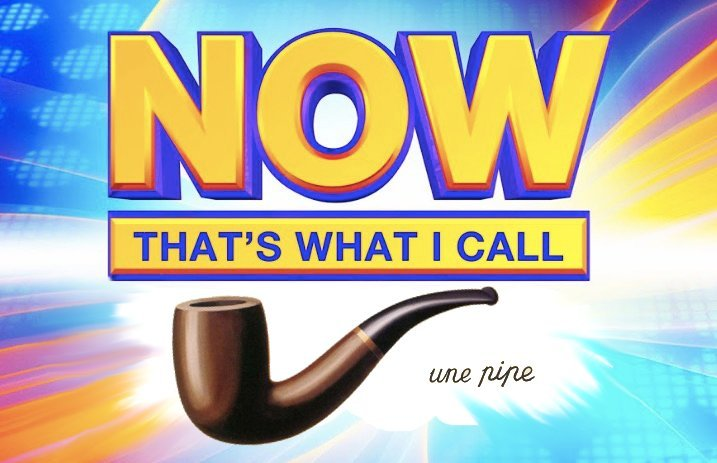
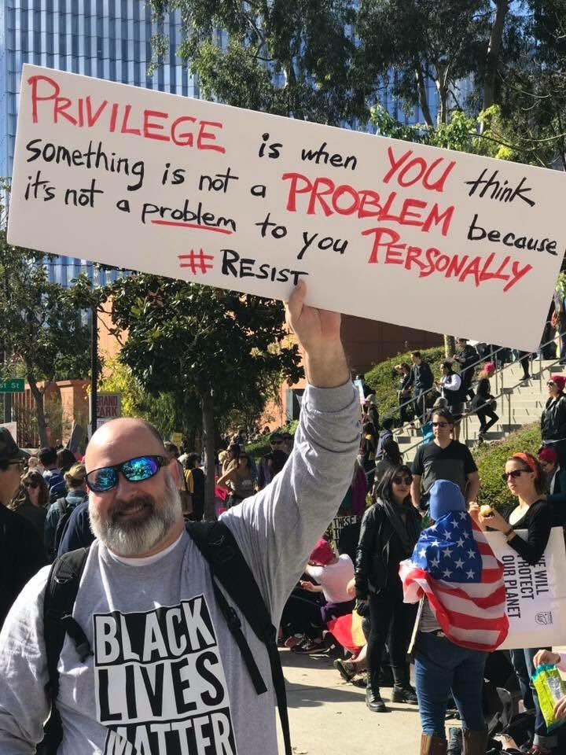

flowingblades:
balioc:
flowingblades:
balioc:
New everything-looks-like-a-nail theory:
Scrupulosity is a form of narcissistic injury. It is the tearing-at-the-seams damage that results from an attempt to stretch your personal identity over a consequentialist or deontic moral framework that is not shaped to support human narratives.
Keep reading
With religion, the problem is often much worse, because religious communities understand this phenomenon and actively try to exacerbate it.
Some very high-minded and rarefied forms of religious practice – various mysticisms, mostly, and the purest strains of mitnagdic Judaism – use something akin to the fundamental logic of the EA theorists, except that they replace “QALYs” with “inherently divine action.” This isn’t about you. This is about God, and praise, and holiness [ / adherence to the Law]. Do what is right to do. Focus on the glory of heaven [ / the fact that you are doing what is commanded]. Stop thinking so much about yourself. It’s totally beside the point.
That’s rare, though, and really super rare outside dedicated clerical communities. What you usually get, instead, is a very cruel promise:
If you follow the rules well enough, if you are sufficiently holy in thought and word and deed, then you will get to incorporate it into your identity. You will be a Holy Person. You will be happy. You will be fulfilled. You will be saved. You will be welcomed into the Kingdom of God.
Not saying you’re wrong here, but a smidgeon of Christian theology will teach you that Christianity says precisely the opposite of that bold text. (if anything, it’s much more akin to the viewpoint you attribute to consequentialist scrupulosity)
But God, being rich in mercy, because of the great love with which he loved us, 5 even when we were dead in our trespasses, made us alive together with Christ—by grace you have been saved— 6 and raised us up with him and seated us with him in the heavenly places in Christ Jesus, 7 so that in the coming ages he might show the immeasurable riches of his grace in kindness toward us in Christ Jesus. 8 For by grace you have been saved through faith. And this is not your own doing; it is the gift of God, 9 not a result of works, so that no one may boast. 10 For we are his workmanship, created in Christ Jesus for good works, which God prepared beforehand, that we should walk in them.
Jesus came for the not-Holy People, but for Sinners.
The saying is trustworthy and deserving of full acceptance, that Christ Jesus came into the world to save sinners, of whom I am the foremost. 16 But I received mercy for this reason, that in me, as the foremost, Jesus Christ might display his perfect patience as an example to those who were to believe in him for eternal life.
PLEASE can people listen to like a 45-minute talk on Christianity before doing complicated philosophy and sociology on it?
Not sure whether it’s my “complicated philosophy and sociology” to which you’re objecting here. Assuming that it is…
…yep, that is totally a very reasonable lesson to derive from the Gospels! Which is why so many do!
(There are also some kinda contrary lessons that you can also derive from the Gospels, if you’re so inclined, and Lord knows you can spend a very long time going down that particular rabbit hole and trying to fit all the puzzle-pieces together. There’s a reason that every chapter of the Summa Theologica is counted as a separate miracle, yo.)
But, from a practical human-psychology standpoint, it doesn’t really matter what the theologians say unless you’re a theologian yourself. It matters how your religious environment actually operates, and what values it inculcates in you.
And with regard to that – well, I can’t really do better than to quote one of my friends, who comes from a background of faith and deals with scrupulosity issues:
Yeah, I mentioned that objection, in the form of “this is what the mental model I have of my Intervarsity friends is saying right now.“ To which I reply “sure, yes, that is what a lot of people say, but it’s not what they do or how they act, and even faithful evangelical protestants who care deeply about salvation by grace and being freed from the tyranny of works suffer a lot from scrupulosity." I have met them. I have read their blog posts.
Okay, that’s a fair response. Indeed it is hard to get things you believe into things you alieve. (that’s one interpretation of the virtue of faith) I would say that “religious practice” in the sense of what people talk about and how people try to act is different though from what believe alieve, what you can tell from their actions and emotions. (and the words are not just words - the gospel does break down unhealthy scrupulosity for some people!)
So sure, Christians don’t do Christianity well enough to get some of the practical benefits, but that doesn’t mean the religion itself is exacerbating the problems, as you say in the OP. (and from the inside perspective, those benefits aren’t really the point anyways)
(being repetitive under the cut)
Keep reading
…ah. I think I see the problem here. In part, anyway.
“With religion, the problem is often much worse…” was not meant to be translated as “all religious practice involves instilling people with nightmarish scrupulosity mindsets.” That would be, uh, dumb. Rather – “the religious version of scrupulosity (when it arises) is often worse than the EA version, because there are often agents who are actively invested in cultivating it.”
*****
That said: in general, I’m inclined to get kind of argumentative in response to claims of the form “but the True Religion really says X!” What the True Religion really says is complicated, and subject to tremendous interpretive dispute, which is why there’s been tremendous interpretive dispute. Sola fide is not a synonym for Correct Christianity, or even Correct Protestantism.
flowingblades:
@balioc probably the most directly relevant passage.
Keep reading
OK…if this is the passage you’re inclined to cite as “most directly relevant,” I’ll admit to a certain level of bafflement.
Christ looks into the camera and says: “you should have an Identity as ‘perfect,’ and here are all the things you need to do to make that happen, they are extremely difficult, they require vast sacrifice and nigh-infinite diligence.” This is scrupulosity in a bottle. This is precisely the thing I’m talking about.
“With man this is impossible, but with God all things are possible.” Admittedly that line does a lot of work, and you can set up your theology so that it blunts or even reverses the impact of everything that came before, but – even for someone faithfully just taking the scriptures at face value, you can see how that’s going to fail a lot of the time.
flowingblades:
balioc:
New everything-looks-like-a-nail theory:
Scrupulosity is a form of narcissistic injury. It is the tearing-at-the-seams damage that results from an attempt to stretch your personal identity over a consequentialist or deontic moral framework that is not shaped to support human narratives.
Keep reading
With religion, the problem is often much worse, because religious communities understand this phenomenon and actively try to exacerbate it.
Some very high-minded and rarefied forms of religious practice – various mysticisms, mostly, and the purest strains of mitnagdic Judaism – use something akin to the fundamental logic of the EA theorists, except that they replace “QALYs” with “inherently divine action.” This isn’t about you. This is about God, and praise, and holiness [ / adherence to the Law]. Do what is right to do. Focus on the glory of heaven [ / the fact that you are doing what is commanded]. Stop thinking so much about yourself. It’s totally beside the point.
That’s rare, though, and really super rare outside dedicated clerical communities. What you usually get, instead, is a very cruel promise:
If you follow the rules well enough, if you are sufficiently holy in thought and word and deed, then you will get to incorporate it into your identity. You will be a Holy Person. You will be happy. You will be fulfilled. You will be saved. You will be welcomed into the Kingdom of God.
Not saying you’re wrong here, but a smidgeon of Christian theology will teach you that Christianity says precisely the opposite of that bold text. (if anything, it’s much more akin to the viewpoint you attribute to consequentialist scrupulosity)
But God, being rich in mercy, because of the great love with which he loved us, 5 even when we were dead in our trespasses, made us alive together with Christ—by grace you have been saved— 6 and raised us up with him and seated us with him in the heavenly places in Christ Jesus, 7 so that in the coming ages he might show the immeasurable riches of his grace in kindness toward us in Christ Jesus. 8 For by grace you have been saved through faith. And this is not your own doing; it is the gift of God, 9 not a result of works, so that no one may boast. 10 For we are his workmanship, created in Christ Jesus for good works, which God prepared beforehand, that we should walk in them.
Jesus came for the not-Holy People, but for Sinners.
The saying is trustworthy and deserving of full acceptance, that Christ Jesus came into the world to save sinners, of whom I am the foremost. 16 But I received mercy for this reason, that in me, as the foremost, Jesus Christ might display his perfect patience as an example to those who were to believe in him for eternal life.
PLEASE can people listen to like a 45-minute talk on Christianity before doing complicated philosophy and sociology on it?
Not sure whether it’s my “complicated philosophy and sociology” to which you’re objecting here. Assuming that it is…
…yep, that is totally a very reasonable lesson to derive from the Gospels! Which is why so many do!
(There are also some kinda contrary lessons that you can also derive from the Gospels, if you’re so inclined, and Lord knows you can spend a very long time going down that particular rabbit hole and trying to fit all the puzzle-pieces together. There’s a reason that every chapter of the Summa Theologica is counted as a separate miracle, yo.)
But, from a practical human-psychology standpoint, it doesn’t really matter what the theologians say unless you’re a theologian yourself. It matters how your religious environment actually operates, and what values it inculcates in you.
And with regard to that – well, I can’t really do better than to quote one of my friends, who comes from a background of faith and deals with scrupulosity issues:
Yeah, I mentioned that objection, in the form of “this is what the mental model I have of my Intervarsity friends is saying right now." To which I reply "sure, yes, that is what a lot of people say, but it’s not what they do or how they act, and even faithful evangelical protestants who care deeply about salvation by grace and being freed from the tyranny of works suffer a lot from scrupulosity." I have met them. I have read their blog posts.
New everything-looks-like-a-nail theory:
Scrupulosity is a form of narcissistic injury. It is the tearing-at-the-seams damage that results from an attempt to stretch your personal identity over a consequentialist or deontic moral framework that is not shaped to support human narratives.
*****
The true perfect effective altruist does not fret about his failure to give more or to do more. Why would he? Fretting achieves nothing. It will not add one QALY to anyone’s existence; it will not cloak one bed in a malaria net, or deworm one child, or put one dollar in the hands of the wretched. And of course it actively adds a small dose of misery to the world, in a small-but-direct way, because fretting sucks. No EA theorist recommends it. The true perfect effective altruist gives everything he possibly can, and when that’s been exhausted, he stops giving and returns to himself with a smile on his face. Needless to say, even if you are a flawed mortal effective altruist who gives only a little of what you can, your hypothetical true-and perfect counterpart would urge you to adopt his sanguine attitude. (He would also urge you to give more, but the one thing is independent of the other.) Beating yourself up doesn’t help!
Yes, yes, this is all very obvious and well-established. But it turns out that we’re not perfect utilitarian calculating machines with perfect control over our emotions. Sometimes our brains make us feel the wrong things.
Indeed. So why is your brain making you feel this particular thing? What is causing you to sink into needless unjustifiable misery over a failure that doesn’t actually affect you, or anyone you love, or anyone you even know?
Some EA-type scrupulosity-sufferers talk about their elaborate, soul-shredding visions of all the suffering in the world. I’m sure that they represent their experiences honestly, but I respectfully submit – if The Suffering Out There were truly at the heart of the matter, the pain would manifest as great grief, but not as guilt. Guilt is a feeling that focuses entirely on the self. The guilty individual believes (or, rather, feels) that he has the power to tip the scales between goodness and badness, that it is worthwhile to focus on his own private sins. The world contains great masses of suffering, no one person’s altruism is going to come anywhere close to changing that, and everyone knows this very well. If your imagination can whip up a vision of the child who starves because of your failure to give a little more, then it can also whip up a vision of all the equally-real children who will starve regardless of what you do. And, indeed, that too is a thing that happens to people, a different kind of depression induced by an overactive empathetic faculty.
But your scrupulosity wants to make it all about you, right? You didn’t skip enough meals to buy malaria nets, so you caused some poor African to die horribly, so you should lie in bed feeling like a worthless piece of shit.
When some part of your mind goes into self-obsessive overdrive, and the topic under consideration doesn’t actually have anything to do with the practical details of your life or relationships, this is at least a strong piece of evidence that something narcissistic is going on.
And consequentialist practices like EA can be built into the inherently-non-consequentialist makeup of a narcissistic identity, just like anything else.
You stare into the mirror, and like all the rest of us, you cannot help asking: who am I? And, because you have constructed one particular kind of story, you answer (in part): I am an effective altruist. I do real good in the world. I weigh the consequences of my actions, and give where giving will help, and save lives. Which is, in theory, a fine and noble thing to tell yourself, at least if it has any truth to it. But it means that, when you feel like your self-conception is under assault from the world, when you’re lost or lonely or scared, and you gaze inwards for confirmation of your ego – am I really the effective altruist that I believe myself to be? – you must proceed to apply the standards of judgment that come packaged with the EA identity. Being an EA means precisely that you evaluate altruism-related claims with consequentialist standards.
Those standards are not meant to hold up anyone’s identity. They are, in human psychological terms, impossibly brutal and impossibly unfair. They do not recognize a concept of “satisfactory” – they do not even recognize a concept of “excellent” – they recognize only more good and less good, and the domain space of more good is infinite. There is no vision of the Worthy EA to which you can compare yourself, there is only the math, and the math will invariably tell you that you could have done a lot more.
(The Giving What We Can pledge represents an attempt to combat this problem directly, by creating a vision of the Worthy EA and saying “a 10% income donation means that you can successfully identify with this vision.” It’s noble, but I believe that it’s basically doomed to failure on a broader scale. As a story,a cultural artifact, it can’t compete with competing virtuous-person models that have a lot more resonance and narrative talent behind them; its only real selling point is the quality of the philosophy that underlies it. But anyone willing to care about to the philosophy will also insist on caring about the fact that 10% is an arbitrary number, and that the math stubbornly insists that you could buy yet more malaria nets with 11% of your income…)
*****
With religion, the problem is often much worse, because religious communities understand this phenomenon and actively try to exacerbate it.
Some very high-minded and rarefied forms of religious practice – various mysticisms, mostly, and the purest strains of mitnagdic Judaism – use something akin to the fundamental logic of the EA theorists, except that they replace “QALYs” with “inherently divine action.” This isn’t about you. This is about God, and praise, and holiness [ / adherence to the Law]. Do what is right to do. Focus on the glory of heaven [ / the fact that you are doing what is commanded]. Stop thinking so much about yourself. It’s totally beside the point.
That’s rare, though, and really super rare outside dedicated clerical communities. What you usually get, instead, is a very cruel promise:
If you follow the rules well enough, if you are sufficiently holy in thought and word and deed, then you will get to incorporate it into your identity. You will be a Holy Person. You will be happy. You will be fulfilled. You will be saved. You will be welcomed into the Kingdom of God.
Which is monstrous. Because you can’t even theoretically follow the rules “well enough,” any more than you can “give enough” to charity. Holiness isn’t virtue-ethical, it doesn’t actually provide you with a human model of success that you can live up to – it just evaluates every single moment of your existence according to a strict code, and in any moment when you’re being less than entirely holy, it sends back “FAIL.”
This is super terrible, if you want people to build secure foundational identities from which they can grow. But it’s really great if you want people to be perpetually guilt-ridden and anxious, which is a useful state of mind to cultivate in certain kinds of low-ranking community members who are mostly supposed to be obedient.
*****
Much the same, I’m sure, can be said of social justice.

bambamramfan:
Anyone want to rip this study apart?
“Each additional robot lowers overall wages by 0.25-0.5%.”
I am pretty sure that there are lots of factories using 200+ robots. 400+ robots, even, in some cases.
So, uh…
jadagul:
femmenietzsche:
Perhaps part of the reason people have difficulties with ~identity~ is that the goal of identity is really to
balance two needs: individual self-expression and finding a group where one belongs. They don’t necessarily cut against each other, but they often can. An identity that was perfectly tailored to you would be an awkward fit for anyone else. Any identity-based group will have to cast a wider net. But
group membership isn’t really presented an explicit goal in our culture. The narrative we present is largely about ~being yourself~, with an implicit but not necessarily correct assumption that you will find an appropriate group to be part of at the end of your journey. So you get identities forming along lines that aren’t conducive to group membership. E.g. they’re too specific or they don’t focus on traits that are
relevant
for making a group function. Sexuality in a loose sense makes plenty of sense as a criterion for group membership, but overly particular labels for sexuality
don’t. There’s nothing wrong with using them for self-understanding, but they can’t totally fulfill what one needs from an identity.
“Keep your identity as narrow as possible while still having friends and living within a workably large social network” might be the implication. To a certain extent, of course, people understand this implicitly and act accordingly, but making the tradeoffs more obvious might aid in better construction of one’s identity (or identities).
I think I’d argue almost exactly the opposite—but I’m probably wrong for the same reason as usual.
My claim would be that most people’s identities are way too centered on how other people view them: that people develop identities almost purely in a group-centric way. People label themselves for consumption and understanding by other people—and thus pigeonhole themselves for group membership.
And my “anti-identity” quest is a quest to get people less worried about group membership and where they belong. I’ve written before that I don’t want to belong to a group, and the feeling of fitting in actually makes me somewhat uncomfortable.
And while I wouldn’t wish discomfort on anyone, in general, I think that this attitude is “more right” in some ways. That once you let your identity get held hostage to conforming to your group, it’s harder for you to be the person you authentically want to be, and who comports with your own values.
(And the “usual” reason that this is wrong is that it’s what @balioc calls the path of enlightenment. It requires you to not care if you don’t fit in and a bunch of people dislike you and/or think you’re weird).
-
A couple of different parts of my theory are getting conflated here.
The fundamental root difficulty of human existence, in some sense, is the same Problem of Suffering that the Buddha noted: we are unhappy/unfulfilled/existentially despairing/however-you-want-to-frame-it. There are a few different strategies for dealing with this. There is the experiential path, in which you try to have a bunch of interactions with the world that make you happy rather than sad; there is the narcissistic path, in which you try to build up a psychic construct inside yourself that you find fulfilling; and then there’s the path of enlightenment, in which you deal with pain and failure basically by ceasing to care about them, by regarding your entire individual existence as a contingent illusion, by coming to regard the concept of “goal” as meaningless. This last (I assert) is incredibly difficult and counterintuitive, so much so that only a handful of people in any given generation have ever made any real progress towards it, and for normal human make-the-world-OK purposes we might as well ignore it.
Once you’re on the narcissistic path, once you’re trying to Have an Identity in the first place, you are faced with further strategic choices. One of the most important ones is: to what extent do I try to maintain this psychic construct purely through my own internal strength, and to what extent do I try to prop it up by receiving validation for it through my interactions with others? This is a balancing question. Narcissism completely fails to work if you need _constant _validation, if your identity has no internal durability at all; then you might as well not have it in the first place, and try to make it on the experiential path. On the other hand, it’s often very difficult to believe in yourself without any input whatsoever, and external validation can pack a lot of psychological punch. (This is often true for structural reasons that are inherent to a given identity, since identities are often social or partly social.)
In general, I do think that it is plausible and worthwhile for people to become better at believing in their own identities, and I encourage psychological programs that cultivate this effect. That said, I _also _believe that it is plausible and worthwhile for people to become better at providing useful kinds of narcissistic validation for each other, and I _also _encourage programs along those lines.
-
I’m probably going to write a real essay about this at some point, but since the point is being raised now…
Socially speaking, identity serves two main functions, which are directly opposed to one another and exist in tension. It justifies group affiliation, which is the thing being talked about here – and it also distinguishes individuals from each other.
People have a need to belong, and thus they cultivate aspects of their identity that allow them to connect to others. “I’m a good Christian, so it totally makes sense that I’m part of this church with all these other good Christians!” “I fit under the LGBT umbrella, so you all should recognize me as one of Your People!”
But people also need to be special, to be individual, to be themselves, and it is beneficial to them when the people around them recognize and acknowledge this special individuality. One way or another, this usually takes the form of playing up distinctions and differences. Sometimes it’s a matter of having a special role in the local community – “I’m the baby of the group, everyone cossets and indulges and adores me, and I play into that by being delightful and non-threatening.” Sometimes it’s a matter of having a superlative trait that you want to be prominently displayed in your identity – “I identify as being the Goth One, so I’m going to be conspicuously broody and spooky and depressing in my social interactions, so that others give me my due as gother-than-they.” Sometimes it’s just a matter of being distinct for distinctiveness’s sake – “I wear orange, because that’s My Color around here.” When this is successfully achieved, you feel that you have specific value rather than being interchangeable with others, and also that you have been successfully mapped to the particular individual story that you’re trying to embody narcissistically.
(This differentiating-identity thing, I think, is the part that gets massively underappreciated within the existing identity discourse.)
The same trait can serve both functions in different contexts. If you identify as Really Smart, well, that can manifest as an attempt to display that you’re Smart Enough to be a member in good standing of the Smart People’s Club – or as an attempt to show that you are the Smartest Guy in the Room through ritual dominance displays – or, likely, both, depending on where you find yourself.
But with regard to @femmenietzsche’s original point: the guy claiming to be a trisexual demigender panromantic squidkin is very clearly not aiming to fit in. But he’s also probably not just speaking straight from the heart in an uncomplicated way. He is specifically making a social gambit for narcissistic purposes; he wants to be seen as different, so he’s playing that up. And this serves a real social function, as much as group-membership does.
bambamramfan:
I’m trying to understand the point of this NRx post from 2015, so maybe some defenders of this perspective can explain.
It seems to say as trust in a cynical Cathedral collapses, then people have no source of knowledge but tribal ingroup beliefs. This leads to cynical nihilism and blind allegiance to your social division.
Which, true, but how is this different than before? As it acknowledges, the trust in Science! before was just trust in your social authorities. You’ve traded one authority for another, but how did things get worse and why would you want to go back?
“As it acknowledges, the trust in Science! before was just trust in your social authorities.” The piece definitely does not acknowledge this, not in the way you’re framing it, which is kind of the critical point.
As the theory goes –
* Objective truth is an accessible and relevant thing. (In your language: science, and similar methodologies, provide some level of access to the Real.) There is an important difference between listening to your doctor and listening to your priest, which is that your doctor actually knows complicated facts about the actual goddamn universe that will allow him to solve your medical problems, whereas the priest is mostly just an expositor of local ideology.
* “Rational ignorance” is the practice of deferring to the expertise of those who know Science! that you don’t, because you can’t know all the Science! yourself.
* Scientific experts can “sell out to the Cathedral” by lacing their allegedly-scientific recommendations with ideology, or even by outright dropping the science wholesale and purveying uncut ideology. This can pay dividends for them in terms of social power, cognitive assonance, etc. However…
* …it’s a self-destructive strategy in the long term, because you can’t fool all the people all the time. Eventually, your patients are going to notice that your “medical advice” is no longer doing any better than priestcraft in terms of getting them results.
* At which point they abandon you and start listening to whichever set of priests they like best anyway. Faith in Science! as an objective, neutral, supra-ideological methodology has been destroyed.
You can feel about that however you want, but I’m pretty sure it fairly describes the content of the post.
jadagul:
balioc:
In which I discuss a possible future writing project. I’d encourage you to read this one even if you usually ignore my Real Blog Posts.
Hm. My first reaction was to disagree somewhat with your explicit claim that most people want to be heroes, and strongly with your implicit claim that this is a good thing.
Then I read the essay and I agreed with basically everything except the way you use the word “hero.” Which I guess reminds me of our recent discussion of how to use the word “identity.”
I want to be great and glorious and transcendent. I want to excel. (My friends tend to joke about how I do everything at max, and do everything with a bit more effort and a bit more excellence than normal people would bother). There’s a reason I connect to high epic fantasy, and to the narrative of the ubermensch.
I specifically don’t connect that to “heroism.” For most of the reasons you cite in your post; the hero is someone who steps up to save a dying world, and our world is pretty fuckign great, thank you very much. And anyway my desire to be great is about me, not about anyone else. (Cue discussion of virtue ethics).
So I guess you say “we should encourage people to be heroes in a way that doesn’t involve narratives of major threats,” and I say “We should encourage people to be great without worrying about heroism,” and those are pretty much the same fucking thing.
I should mention separately that I really connected to your comments about the people who are always hoping something goes wrong, so they can step up and be heroes. I like taking care of my friends, so whenever a friend has a problem a little piece of me goes on high alert and gets kinda excited. Like, “Oh, I hope there’s a problem I can solve!”
And this is probably largely responsible for my tendency to kind of adopt people who need a certain amount of caretaking. If they have medium-sized fires on a regular basis, I have something to help with and that makes me happy. Which I guess is what you were talking about.
Hrm. Some random scattered thoughts:
* I don’t think I made the claim that “most people want to be heroes.” I certainly didn’t mean to make that claim. It’s almost certainly not “most people.” It’s some people. You find the urge-to-heroism in lots of places – especially amongst the young, and especially-especially amongst those who are talented enough that dreams of greatness don’t seem totally implausible from the get-go – but it’s definitely not everywhere. (In fact, there was a bit that got cut from both the post and the follow-up bits-that-got-cut post, in which I said as much directly.) But even a small slice of the population adds up to something big and important, when you’re looking at the whole world.
* There’s at least one important difference between [my models of] heroism and just-plain-personal-excellence, which is conflict. Heroes aren’t just Super Awesome People; they’re people who undergo heroic character arcs, which involves contending with some kind of antagonistic force. You can have an artificial antagonism rather than a Genuine Existential Threat, and it still works, which is sort of what I’m going for here. (We already allow for that in a few sectors, like high-level competition, and we can expand the model.) But just being great doesn’t capture the same empowering sense of narrative.
[Yeah, you can try to model “the difficulty of becoming greater” as an impersonal antagonist, in a sort of Man-versus-Nature way, allowing you to wring a heroic story out of a private self-improvement process. I don’t think this is necessarily doomed to failure, but I think it’s going to be hard for most non-hermits to get very far with that strategy, because the “drama” is too completely internal and too hard to put on display for validation. And once again, the conversation circles around to “just how difficult is it to be a self-contained monk who doesn’t need any validation from anyone?”]
* I don’t really know what your stance on virtue ethics is, but as far as I’m concerned, the world is a better place for your being awesome. Even if no one else has any good way to access it or appreciate it.
In which I find it sad to write a bunch of stuff and then not use most of it.
In which I discuss a possible future writing project. I’d encourage you to read this one even if you usually ignore my Real Blog Posts.
Accelerationism: Dos and Don’ts
osberend:
nicdevera:
bambamramfan:
Accelerationism is the word for the political tendency among radicals to encourage the worst among their enemies, and to be dismissive of short-term material gains that fall short of a revolution. It’s a form of logical argument, and you can see this form replicated among many political movements with different concrete values.
It’s leftists who argue that Trump will be good for revealing the ugly face of nationalism; it’s right-anarchists who thought the ACA would be so bad it would undermine support for all of big government liberalism; an environmentalist would rather a park become polluted and ugly and get people to focus on corporate actors who contribute to climate change.
The current society is mired in a capitalist ideology dedicated to making everyone miserable. It cannot be redeemed or purified. Should measures like increased Medicaid funding, or a cool black man as President, be supported as making lives better and the oppressed happier, or should we withhold our support because they distract from the only goal that will get us out of this system: anti-capitalist revolution?
That’s the question of accelerationism in a nutshell. Things are getting bad, do we make them get bad faster to bring about the inevitable end state sooner? It’s an accusation that gets through around between center-leftists and far-leftists a lot.
But we are really talking about two different things, and that is key.
***
In purely material terms, should you help the worst off, or should you refrain in order to stoke the fires of their anger?
This is obviously a dumb question.
There is no guarantee the revolution is coming. There might never be a revolution. Or the revolution might just empower a totalitarian dystopia. Or your neglectful immiseration of people might be entirely irrelevant to that revolution.
The world is very large, and very complex, and incredibly uncertain. Especially when it comes to political tactics. Who the fuck knows what works. Who knows if your long-term goal is really a good idea. We’re not talking “a bird in the hand is better than two in the bush,” we’re talking “a bird we’re about to catch is still better than two thousand birds in a bush on top of a high mountain in another country that someone told you about once.”
Your ethical responsibility is to proximate results. Help the people you can, do things that you know will work and that you can see the results of. Resist ideologies and political theories that say “actually doing this mean or easy thing serves the greater good in the very long term” and who never seem to actually pay out the greater good. Focus instead on specificity in your practical solutions.
So yes, increased Medicaid funding is great. No ethical left should oppose it.
***
But there’s a difference between helping everyone, and making a situation smoother and more pleasant.
For instance, David Simon, creator of the Wire which dramatizes amazingly well how the drug war hurts black communities, is opposed to marijuana legalization.
“I’m against it,” Simon told his stunned audience at the Royal Institution on Thursday night. “The last thing I want to do is rationalise the easiest, the most benign end of this. The whole concept needs to be changed, the debate reframed.
“I want the thing to fall as one complete edifice. If they manage to let a few white middle-class people off the hook, that’s very dangerous. If they can find a way for white kids in middle-class suburbia to get high without them going to jail,” he continued, “and getting them to think that what they do is a million miles away from black kids taking crack, that is what politicians would do.”
(Yes, I’m assuming everyone who reads this is pro-legalization, at least in terms of ending the brutal Drug War.)
If you think Simons is being too blinkered here, let’s imagine a more extreme scenario: What if we legalized heroin and instituted addiction-rehabilitation programs for the families of Congresspeople?
Now, the families of Congresspeople are people too. Their pain is real. If one of them goes to jail for possession, that is bad. And if they are addicted, humane and effective rehabilitation is better than jail. So from a pure harm reduction stance, how can you object to this?
But we of course know the incentives it sets up. It is good that Congress labors under the same laws as the rest of its citizenry. They should pay the cost for these laws like the rest of us, so that if the laws are cruel and unjust they will notice and get rid of them. A world where their kids don’t go to jail for possession is more pleasant to them, but it’s not beneficial for everyone.
That may be absurdly extreme, but it’s not very different from “legalizing the drug white people do.” The Drug War is cruel, invasive, and counter-productive - exempting some upper classes from it allows them to forget that experience, and to Other the people who do experience its vicissitudes.
This is, for instance, the problem with tax deductions for employer sponsored healthcare. It guarantees healthcare to the people our ruling class interacts with, leaving out and isolating the people our rulers avoid anyway, making it even harder to get any help for them. This is why universal programs are so important.
That accelerationism, to pull down the benefits some people enjoy that allow them to ignore the pain of the larger masses, is good and just. It is right to pull off the pleasant mask of capitalism or state violence, so that everyone sees its obscene underneath.
So, when faced with the question of, “do I want to make things worse in order to encourage far off radical solutions”, we need to figure out whether it’s a policy that helps everyone, or a policy that merely covers up the existing harsh reality, and then decide our accelerationism.
How is marijuana for white kids? A quick Google confirms marijuana use is about even across race, but there’s a disproportionate number of black arrests for marijuana
This! This! This!
From the ACLU: “Despite roughly equal usage rates, Blacks are 3.73 times more likely than whites to be arrested for marijuana.“
@bambamramfan is defending (along with David Simon) continuing a policy that disproportionately hurts blacks, in the name of not taking palliative measures that disproportionately benefit whites. This isn’t smart accelerationism, it’s pants-on-head lunacy.
I also think @balioc is right on principle in the (counterfactual) debate he’s been having bambamramfan about this, but ultimately secondary to the fact that the position the latter is taken is premised on factual claims that simply aren’t true.
When in doubt, check numbers!
(Not to mention that a lot of the black kids who take up smoking crack would likely take up smoking cannabis instead, if smoking cannabis were legal and smoking crack continued to be illegal. Because duh.)
I suppose I should say: yes, this is entirely true. The fight-over-ethical-principle is worth having, which is why I’ve been doing that, but the particular object-level issue at hand here is more properly dealt with by pointing this out.
Accelerationism: Dos and Don’ts
bambamramfan:
balioc:
bambamramfan:
Accelerationism is the word for the political tendency among radicals to encourage the worst among their enemies, and to be dismissive of short-term material gains that fall short of a revolution. It’s a form of logical argument, and you can see this form replicated among many political movements with different concrete values.
It’s leftists who argue that Trump will be good for revealing the ugly face of nationalism; it’s right-anarchists who thought the ACA would be so bad it would undermine support for all of big government liberalism; an environmentalist would rather a park become polluted and ugly and get people to focus on corporate actors who contribute to climate change.
The current society is mired in a capitalist ideology dedicated to making everyone miserable. It cannot be redeemed or purified. Should measures like increased Medicaid funding, or a cool black man as President, be supported as making lives better and the oppressed happier, or should we withhold our support because they distract from the only goal that will get us out of this system: anti-capitalist revolution?
That’s the question of accelerationism in a nutshell. Things are getting bad, do we make them get bad faster to bring about the inevitable end state sooner? It’s an accusation that gets through around between center-leftists and far-leftists a lot.
But we are really talking about two different things, and that is key.
***
In purely material terms, should you help the worst off, or should you refrain in order to stoke the fires of their anger?
This is obviously a dumb question.
There is no guarantee the revolution is coming. There might never be a revolution. Or the revolution might just empower a totalitarian dystopia. Or your neglectful immiseration of people might be entirely irrelevant to that revolution.
The world is very large, and very complex, and incredibly uncertain. Especially when it comes to political tactics. Who the fuck knows what works. Who knows if your long-term goal is really a good idea. We’re not talking “a bird in the hand is better than two in the bush,” we’re talking “a bird we’re about to catch is still better than two thousand birds in a bush on top of a high mountain in another country that someone told you about once.”
Your ethical responsibility is to proximate results. Help the people you can, do things that you know will work and that you can see the results of. Resist ideologies and political theories that say “actually doing this mean or easy thing serves the greater good in the very long term” and who never seem to actually pay out the greater good. Focus instead on specificity in your practical solutions.
So yes, increased Medicaid funding is great. No ethical left should oppose it.
***
But there’s a difference between helping everyone, and making a situation smoother and more pleasant.
For instance, David Simon, creator of the Wire which dramatizes amazingly well how the drug war hurts black communities, is opposed to marijuana legalization.
“I’m against it,” Simon told his stunned audience at the Royal Institution on Thursday night. “The last thing I want to do is rationalise the easiest, the most benign end of this. The whole concept needs to be changed, the debate reframed.
“I want the thing to fall as one complete edifice. If they manage to let a few white middle-class people off the hook, that’s very dangerous. If they can find a way for white kids in middle-class suburbia to get high without them going to jail,” he continued, “and getting them to think that what they do is a million miles away from black kids taking crack, that is what politicians would do.”
(Yes, I’m assuming everyone who reads this is pro-legalization, at least in terms of ending the brutal Drug War.)
If you think Simons is being too blinkered here, let’s imagine a more extreme scenario: What if we legalized heroin and instituted addiction-rehabilitation programs for the families of Congresspeople?
Now, the families of Congresspeople are people too. Their pain is real. If one of them goes to jail for possession, that is bad. And if they are addicted, humane and effective rehabilitation is better than jail. So from a pure harm reduction stance, how can you object to this?
But we of course know the incentives it sets up. It is good that Congress labors under the same laws as the rest of its citizenry. They should pay the cost for these laws like the rest of us, so that if the laws are cruel and unjust they will notice and get rid of them. A world where their kids don’t go to jail for possession is more pleasant to them, but it’s not beneficial for everyone.
That may be absurdly extreme, but it’s not very different from “legalizing the drug white people do.” The Drug War is cruel, invasive, and counter-productive - exempting some upper classes from it allows them to forget that experience, and to Other the people who do experience its vicissitudes.
This is, for instance, the problem with tax deductions for employer sponsored healthcare. It guarantees healthcare to the people our ruling class interacts with, leaving out and isolating the people our rulers avoid anyway, making it even harder to get any help for them. This is why universal programs are so important.
That accelerationism, to pull down the benefits some people enjoy that allow them to ignore the pain of the larger masses, is good and just. It is right to pull off the pleasant mask of capitalism or state violence, so that everyone sees its obscene underneath.
So, when faced with the question of, “do I want to make things worse in order to encourage far off radical solutions”, we need to figure out whether it’s a policy that helps everyone, or a policy that merely covers up the existing harsh reality, and then decide our accelerationism.
I strenuously object to this framing.
The “actually helping” versus “just making things smoother” dichotomy is not a real thing. Or, rather, it is – but, seen for what it is, it is not a thing that you would support as a foundation for ethics or policy. I certainly don’t.
*****
The examples of “anti-smoothing” policies that you support, on an abstract level, function exactly the same way as the examples of “just causing pain” policies that you despise. They hurt people unnecessarily, on the grounds that the hurting will spur the world to productive action, while relieving the hurt would lull the world into a sense of undeserved complacency. As you say yourself: the white stoner kid, and the heroin-addicted Congressman’s child, are enduring real and morally-salient suffering at the hands of the legal system. By choosing to let that happen to them rather than patching the system to prevent it, we are saying “we care less about your suffering than about some hazy unknowable distant prospect of greater systemic change.” We are deciding that “allowing the upper classes to forget [the systemic problems],” which is a very abstract sort of problem that may not result in anything concrete at all, matters more than the ruination of kids’ lives. Calling it “anti-smoothness” is a hypocritical fudge. It is accelerationism, pure and simple.
And on the flip side…well, if you really want to ensure that the rich-and-powerful aren’t allowed to forget about the big systemic problems, the best way to make that happen is to get the non-rich-and-powerful to riot. Which works better if you take away all their stuff. It doesn’t have to be a vague, heighten-the-contradictions “maybe things will hit rock bottom and then start going up again” kind of plan; it can be very tactical and very concrete. This is the strategy espoused by all manner of radical groups back in the ‘60s, and today.
*****
So…what is the actual difference between the examples on your first list and the examples on the second list? Who the victims are. That’s it. In the “unacceptable” cases, the suffering is endured by the “worst-off.” In the “acceptable” cases, the suffering is endured by the “powerful.”
You’ve reinvented the concept of privilege here. You have divided people into classes and said “these people’s suffering is deontically unconscionable, but these’s people’s suffering doesn’t matter as much, it can be countenanced for the greater good.” Bad universalist, no biscuit.
*****
The actual answer that yields the result you want is something you’ll like a lot less. It’s not a Supreme Ethical Principle; it’s a calculus. It’s the rationalists’ “shut up and multiply!” Usually accelerationism is bad, sometimes it’s good, and the difference is (a) what the costs are and (b) what the expected payout is. If we’re talking about laws that apply only to save Congressmen’s kids, well, the costs of not implementing them are (relatively) low and the amount of acceleration that you gain is relatively great. If we’re talking about laws that give much-needed healthcare to millions of poor people who are not right this moment in the process of fomenting revolution, the costs of not implementing them are almost certainly too high.
So if you only paid attention to the two (point five) examples, and not to the abstract description, then yes I can see how you would arrive at that conclusion. It is in fact wrong to go “haha, the suffering of privileged people like Congressional kids, white UMC dope smokers, and employed people (??) does not matter.” That would not be ethical, and so you can be pretty sure that’s not what I meant, especially as it also contradicts the thesis (which you didn’t directly address, except by noting the absence of applicable examples.)
I should provide more examples then. But first, let’s go back to the beginning.
Accelerationism is an attitude we see frequently in political disputes. (Even Trump today is rejoicing that the AHCA failed, because its explosion will create pressure for future repeal.) It comes up often enough that saying accelerationism is always wrong (or always right) seems overbroad. There are too many cases of sick systems that need to be broken, rather than given short term balm. We need a differentiator.
Your solution is to “do the math.” But our ability to make these sort of cause and effect calculations is incredibly bad. And all attempts at making the sort of super-complicated predictions this requires just open our thinking to the sort of biases Less Wrongers know so well. We’ll choose the most comforting narrative and tell ourselves we are doing cold, hard math.
Consequentialism is hard, yo. If you’re talking trolley problem thought experiments where you know the probablistic outcome of all actions to the third significant figure, yeah go do that. But we don’t usually know it, but must usually make decisions anyway.
The different option I offer is an aesthetic differentiation. Is the harm you are preventing (or not) primarily material deprivation, or is it just a disruption of harmony? Is it unpleasant?
An example might be the election of Trump. Besides the possibility of nuclear oblivion, most of the histrionic liberal reaction to him was how unpleasant he was (at least relative to most other Republican candidates.) He said racist things, he said sexist things, he was cavalier about assault, he lied blatantly, it was just an endless parade of obscenities. And so when evaluating “Trump vs Cruz” (or even Kasich) we have to ask will he make the policy results that much worse, or will he just make political life more unpleasant, uglier, and rough?
And if we admit it’s the latter, is that really inaccurate? It’s more likely that Trump represents the truth of Republican positions (contradictory idiocy motivated by gut feeling that flatters white, rich Christians as the center of the world), and will accelerate the proper reaction to that. Not Trump as “easier to beat in the general”, but Trump as an acceleration President. The commentators who predicted that Trump would be hugely offensive but on material consequence not very different from a responsible, moderate Republican… have so far not been very wrong.
As @redantsunderneath mentioned in his film taste recently (which I share), the great thing difficult and visceral movies can do for us is to teach us to lean in to discomfort. We can differentiate between something that is actually hurting us and evil, or something that is disgusting or disharmonious.
Sometimes this aesthetic improvement means “we have cleaned up the area around the powerful decision makers”, like kicking the homeless and porn shops out of Times Square, or legalizing drugs their kids are using. Even if there is some material component to that, we can tell the difference between what the primary vector is: actual broad harm reduction, or adding rosy tints to the windows of the subjective actors.
Sometimes it’s just a matter of asking “is that friend or commenter who I am very annoyed at hurting me, or just making me uncomfortable?”
To return to one of my original examples: I am not actually saying “repeal the employer-based tax deduction for healthcare to see what universal program Congress passes in its place.” We know the harm that would come from that. It was just an example of a policy that reduced harm, but did even more than that by reducing all the harm of being uninsured within sight of the wealthy and influential, and so also stalled further progress. We can understand this dynamic, and in the future try to build our programs around the dispossessed rather than around the affluent and hoping they work their way down to everyone.
Nope, still not buying it.
You say: “Is the harm you are preventing (or not) primarily material deprivation, or is it just a disruption of harmony?
Is it unpleasant?” And the answer, in all of your original examples (and some of your new ones), is – “it is totally material deprivation.” When an idiot drug-using kid goes to jail for a couple of years and gets his college admission revoked and has a criminal record forever and maybe gets raped or joins a skinhead gang, that is substantial concrete harm. When the President is unprecedentedly willing to break political norms even for a modern Republican, and pushes our federal institutions into corruption and chaos, that is substantial concrete harm. Reducing this stuff to “aesthetic unpleasantness in the eyes of the Great and Good” is an insult to everyone involved. And that’s what’s going to happen most of the time you try to make this distinction do any work.
To be fair, the cleaning-up-Times-Square example sort of gets at what you want. Even there, though, there are actual
utility-destroying
psychological harms in play, and you’re taking it upon yourself to decide which harms get to have moral salience and which don’t. Having a major public thoroughfare be pleasant and friendly and welcoming, instead of fearful and ugly, is a source of well-being for many; you can call that “smoothness” if you want, but the smoothness generates actual for-reals joy, and taking that away from people for the sake of accelerationism will hurt them. You’re welcome to take the stance that smoothness-derived well-being doesn’t have moral valence, that’s totally consistent, but then I request that you hand in your hedonic-consequentialist card.
But most importantly:
“We can understand this dynamic, and in the future try to build our
programs around the dispossessed rather than around the affluent and
hoping they work their way down to everyone.”
In abstract ethical terms, going by the principles you claim to espouse, this is hogwash. The affluent and the dispossessed are morally equivalent, and favoring one over the other is necessarily monstrous.
In practical concrete terms, maybe you’re right. Or maybe focusing on the dispossessed will lead to class-consciousness amongst the rich and a backlash of resentment, whereas a more even-handed approach would be more likely to gather harmonious support. I dunno, man. This shit is hard. The only way out of the endless sea of conflicting just-so stories is to…do the math.
Which, as you say, is incredibly difficult. No lie. We can approximate, and try to account for our biases, and check each other’s work; that will help, but it goes only so far. Better that, though, than an intrinsically deceptive principled stance.
I find it strange that your objection to religion is believing in unproven things. I'm very uneasy with the organised structure of religions because I've seen them being abused for bad things so many times (although I acknowledge it doesn't have to be like that), but I don't see a problem in having faith in something (in the religious sense), as long as you don't try to force me to live by it...
fierceawakening:
I think it comes from people telling me “your mental health symptoms will go away when and only when you fully believe in this unproven thing.”
Listening to this and finding yourself unable to believe in the unproven thing (precisely because it is an unproven thing! WHY IS THIS SO HARD TO UNDERSTAND OMFG) even if you trytrytrytrytrysohard leads to “I am broken, always will be, and can never get better.”
PTSD does not work like that, and theism does not cure it. Plenty of theists have it even if they are fully confident God loves them/is looking out for them/is there for them/etc.
gaaaaaaaaaaaaah
Whatever else may be true of the people pushing this line on you, they are bad at being theists.
I don’t know what actual faith they espouse, but in this case it doesn’t matter. All the world’s even-vaguely-respectable, halfway-thought-out monotheisms agree: God does not exist to be your therapist. God is source of succor and solace, it’s true, but the ranks of the faithful are filled with people who are hurting and fucked-up. Faith is not a cure for suffering. Hell, faith can do a lot to cause suffering! The yoke of the Lord is an awful burden! Everyone knows this! The Church Doctors sure knew it! Aquinas knew it! Calvin knew it! Akiva knew it!
Central reasons to have faith include: (1) the doctrines of the religion in question are true, and it is good to believe things that are true; (2) it is good, in and of itself, to honor and exalt your Creator; (3) the hope or promise of salvation.
This nonsense you describe is just Moralistic Therapeutic Deism being pushed by people who don’t want to face down the profound insincerity of their own beliefs. It is not worth a moment of your time. It is definitely not worthy of being your mental model of “how theism works.”
Accelerationism: Dos and Don’ts
bambamramfan:
Accelerationism is the word for the political tendency among radicals to encourage the worst among their enemies, and to be dismissive of short-term material gains that fall short of a revolution. It’s a form of logical argument, and you can see this form replicated among many political movements with different concrete values.
It’s leftists who argue that Trump will be good for revealing the ugly face of nationalism; it’s right-anarchists who thought the ACA would be so bad it would undermine support for all of big government liberalism; an environmentalist would rather a park become polluted and ugly and get people to focus on corporate actors who contribute to climate change.
The current society is mired in a capitalist ideology dedicated to making everyone miserable. It cannot be redeemed or purified. Should measures like increased Medicaid funding, or a cool black man as President, be supported as making lives better and the oppressed happier, or should we withhold our support because they distract from the only goal that will get us out of this system: anti-capitalist revolution?
That’s the question of accelerationism in a nutshell. Things are getting bad, do we make them get bad faster to bring about the inevitable end state sooner? It’s an accusation that gets through around between center-leftists and far-leftists a lot.
But we are really talking about two different things, and that is key.
***
In purely material terms, should you help the worst off, or should you refrain in order to stoke the fires of their anger?
This is obviously a dumb question.
There is no guarantee the revolution is coming. There might never be a revolution. Or the revolution might just empower a totalitarian dystopia. Or your neglectful immiseration of people might be entirely irrelevant to that revolution.
The world is very large, and very complex, and incredibly uncertain. Especially when it comes to political tactics. Who the fuck knows what works. Who knows if your long-term goal is really a good idea. We’re not talking “a bird in the hand is better than two in the bush,” we’re talking “a bird we’re about to catch is still better than two thousand birds in a bush on top of a high mountain in another country that someone told you about once.”
Your ethical responsibility is to proximate results. Help the people you can, do things that you know will work and that you can see the results of. Resist ideologies and political theories that say “actually doing this mean or easy thing serves the greater good in the very long term” and who never seem to actually pay out the greater good. Focus instead on specificity in your practical solutions.
So yes, increased Medicaid funding is great. No ethical left should oppose it.
***
But there’s a difference between helping everyone, and making a situation smoother and more pleasant.
For instance, David Simon, creator of the Wire which dramatizes amazingly well how the drug war hurts black communities, is opposed to marijuana legalization.
“I’m against it,” Simon told his stunned audience at the Royal Institution on Thursday night. “The last thing I want to do is rationalise the easiest, the most benign end of this. The whole concept needs to be changed, the debate reframed.
“I want the thing to fall as one complete edifice. If they manage to let a few white middle-class people off the hook, that’s very dangerous. If they can find a way for white kids in middle-class suburbia to get high without them going to jail,” he continued, “and getting them to think that what they do is a million miles away from black kids taking crack, that is what politicians would do.”
(Yes, I’m assuming everyone who reads this is pro-legalization, at least in terms of ending the brutal Drug War.)
If you think Simons is being too blinkered here, let’s imagine a more extreme scenario: What if we legalized heroin and instituted addiction-rehabilitation programs for the families of Congresspeople?
Now, the families of Congresspeople are people too. Their pain is real. If one of them goes to jail for possession, that is bad. And if they are addicted, humane and effective rehabilitation is better than jail. So from a pure harm reduction stance, how can you object to this?
But we of course know the incentives it sets up. It is good that Congress labors under the same laws as the rest of its citizenry. They should pay the cost for these laws like the rest of us, so that if the laws are cruel and unjust they will notice and get rid of them. A world where their kids don’t go to jail for possession is more pleasant to them, but it’s not beneficial for everyone.
That may be absurdly extreme, but it’s not very different from “legalizing the drug white people do.” The Drug War is cruel, invasive, and counter-productive - exempting some upper classes from it allows them to forget that experience, and to Other the people who do experience its vicissitudes.
This is, for instance, the problem with tax deductions for employer sponsored healthcare. It guarantees healthcare to the people our ruling class interacts with, leaving out and isolating the people our rulers avoid anyway, making it even harder to get any help for them. This is why universal programs are so important.
That accelerationism, to pull down the benefits some people enjoy that allow them to ignore the pain of the larger masses, is good and just. It is right to pull off the pleasant mask of capitalism or state violence, so that everyone sees its obscene underneath.
So, when faced with the question of, “do I want to make things worse in order to encourage far off radical solutions”, we need to figure out whether it’s a policy that helps everyone, or a policy that merely covers up the existing harsh reality, and then decide our accelerationism.
I strenuously object to this framing.
The “actually helping” versus “just making things smoother” dichotomy is not a real thing. Or, rather, it is – but, seen for what it is, it is not a thing that you would support as a foundation for ethics or policy. I certainly don’t.
*****
The examples of “anti-smoothing” policies that you support, on an abstract level, function exactly the same way as the examples of “just causing pain” policies that you despise. They hurt people unnecessarily, on the grounds that the hurting will spur the world to productive action, while relieving the hurt would lull the world into a sense of undeserved complacency. As you say yourself: the white stoner kid, and the heroin-addicted Congressman’s child, are enduring real and morally-salient suffering at the hands of the legal system. By choosing to let that happen to them rather than patching the system to prevent it, we are saying “we care less about your suffering than about some hazy unknowable distant prospect of greater systemic change.” We are deciding that “allowing the upper classes to forget [the systemic problems],” which is a very abstract sort of problem that may not result in anything concrete at all, matters more than the ruination of kids’ lives. Calling it “anti-smoothness” is a hypocritical fudge. It is accelerationism, pure and simple.
And on the flip side…well, if you really want to ensure that the rich-and-powerful aren’t allowed to forget about the big systemic problems, the best way to make that happen is to get the non-rich-and-powerful to riot. Which works better if you take away all their stuff. It doesn’t have to be a vague, heighten-the-contradictions “maybe things will hit rock bottom and then start going up again” kind of plan; it can be very tactical and very concrete. This is the strategy espoused by all manner of radical groups back in the ‘60s, and today.
*****
So…what is the actual difference between the examples on your first list and the examples on the second list? Who the victims are. That’s it. In the “unacceptable” cases, the suffering is endured by the “worst-off.” In the “acceptable” cases, the suffering is endured by the “powerful.”
You’ve reinvented the concept of privilege here. You have divided people into classes and said “these people’s suffering is deontically unconscionable, but these’s people’s suffering doesn’t matter as much, it can be countenanced for the greater good.” Bad universalist, no biscuit.
*****
The actual answer that yields the result you want is something you’ll like a lot less. It’s not a Supreme Ethical Principle; it’s a calculus. It’s the rationalists’ “shut up and multiply!” Usually accelerationism is bad, sometimes it’s good, and the difference is (a) what the costs are and (b) what the expected payout is. If we’re talking about laws that apply only to save Congressmen’s kids, well, the costs of not implementing them are (relatively) low and the amount of acceleration that you gain is relatively great. If we’re talking about laws that give much-needed healthcare to millions of poor people who are not right this moment in the process of fomenting revolution, the costs of not implementing them are almost certainly too high.
bambamramfan:
mitigatedchaos:
bambamramfan:
discoursedrome:
@rustingbridges wrote
to be fair, our society at present has a deeply confused idea of what marriage is for, and this can be seen as a symptom of that
(I don’t particularly care what marriage is for. Expression of
romantic love, or child-having, or some package of legal rights,
whichever is fine. I’m just annoyed we can’t pick. Do one thing and do
it well, y'kno)
and now for the hot read as: unnecessarily disagreeable
take: in a world where the government (and a large tax base) pays the
floor healthcare costs of random persons, it’s totally reasonable for
them to be interested in banning things that will increase their costs.
If these things have sufficiently few supporters and many detractors,
guess which way we’re going to go in a democracy?
There’s definitely a legal argument for banning cousin marriage – @mitigatedchaos also touches on that in their reply here, for instance, and they’re not wrong per se. I’m skeptical that this sort of law does enough good to justify the loss of liberty, given that most people have a natural aversion to the behaviour in question and it’s the sort of thing that mainly becomes a problem when a lot of people do it over time, but certainly the state gets up to worse things for worse reasons.
But that doesn’t make a case that it’s less moral than anything with similarly deleterious effects – even from the most interventionist angle it’s, at best, an argument about picking your battles. My objection is that arguments against incest tend to be built around the idea that it’s a unique moral evil in a way that can’t really be supported by arguments from health or genetics. If people want to make pragmatic cost/benefit arguments that’s worth doing, but they need to get down off their high horse on the topic and onto a smaller horse that’s more within their means.
You spend how many hours talking with rationalists and public policy theorists about the nature of morality, evidence based interventions, and not shaming people for having politically unpopular beliefs.
Then someone brings up a taboo sexual activity, and it’s all “well if they had kids that might be bad so it seems proportionate to say anything romantic or sexual they do should be shamed. I mean just think of the medical bills for their hypothetical kids they never considered having.”
The challenge isn’t getting uninformed people to have good principles, it’s getting even thoughtful people to apply them instead of knee-jerk rationalizations.
This depends heavily on one’s opinion of the general population and their susceptibility to complex memes that depend on a careful analysis of information.
If one is optimistic, switching to the “it’s okay not to taboo this kind of incest socially, even if we will argue to them not to have kids” seems reasonable.
If one is pessimistic, then tearing away the current taboo won’t result in proportionate response, but rather no response.
An optimal political response isn’t actually available, and the odds that someone will be foreveralone if they can’t be with their cousin are pretty low, just leaving the taboo for now seems prudent, with the time limit of the next generation of genetic repair/enhancement technology.
Also we’ve had experiments with “societies that allow cousin marriage”, and it doesn’t look good.
This is an argument that we can’t have nuanced or moderate norms, because people will only listen to extremes.
It’s also an argument that our concern is “someone being forever alone”, and not “having the freedom to choose whatever they want romantically so long as its consensual.”
I’m not particularly invested in defending the rights of cousin-daters, so much as I am utterly flabbergasted at how people would never use this sort of logic in a serious debate, let alone tolerate it from their ideological opponents, but bring it up in taboo situations to justify feelings of ickyness.
It’s the damn Electoral College argument all over again. Yes, you are clever. All of rattumb is very clever. You can come up with nominal arguments against anything. Are they good arguments? Should they be taken as the same weight as the default ethical principles like “the person with more votes wins” and “let people do what they want.”)
Like imagine you wanted to date someone of the same sex, and a conservative was using the arguments of the form presented in this thread, as reasons you can’t. How upset would you be.
Speaking as someone who is definitely very pro-cousin-marriage (in the sense of anti-shaming-cousin-marriage), and probably very pro-incest in general relative to the norm even here in Wacky Offbeat Ideology Tumblr –
– I think you’re being disingenuous here about what the actual concerns of the anti-cousin-marriage people are. Which is totally understandable, because they’re being disingenuous about what their actual concerns are. I will be super obnoxious, and say “often they don’t even consciously understand what their actual concerns are, because they don’t like thinking about it.” But even so.
I’ve hashed out this argument with people many times, and in each instance when it was possible to drill past the “ew incest” factor and find something real, it always comes down to concerns about large-scale society-wide behavior. This is not about persecuting a few sad cousin-lovers because their predilections disgust us. This is about maintaining a Rule because of an unspeakable belief that the Rule is holding back a destructive tide.
People tend to gravitate towards the thought that, if consanguineous relationships become acceptable, they will proceed to become very popular very quickly.
And it’s not like this is a crazypants belief. There are a lot of things that make consanguineous relationships attractive! Absent taboos and the Westermarck effect, your relations are likely to be substantially more attractive to you than the average potential mate, if only because of how much likelier it is that you’ll have a bunch of stuff in common. (See: the absurdly common situation where people end up tragically falling in love with their long-lost bio-siblings, bio-parents, or bio-children.) And if family ties have any social power at all, as they do even in modern America, a cousin is a much more reliable ally than a stranger. In societies where cousin marriage is a thing, it’s super-popular for a reason.
Liberals/leftists in particular see horrific visions of rich families incestuously intermarrying, never ever ever letting any of the money outside their own ranks, and becoming a blood caste. Which is, y’know, pretty much the thing that happened amongst most rich people through most of history. Including most of American history.
So, as you of all people should be willing to recognize, you have to face up to the issue squarely rather than ducking around it by asserting that the facts are maximally-convenient. Maybe the taboo against cousin marriage is in fact having very strong effects; maybe it’s all that stands between us and a storm of genetic disease and class stratification. Is that enough to justify persecuting and shaming people for their love?
*****
(Also: default ethical principles like “the person with more votes wins” pfffffffhahahahaha.)
drethelin:
suspected-spinozist:
nostalgebraist:
orbispelagium:
shacklesburst:
Do I know anybody here who’d not choose Utopia in a heartbeat? Okay, I could maybe see one or two Blacklaw/Graylaw Hiveless. But it seems such an obvious choice to me?? But there are probably some Masons, Mitsubishi, Cousins, Brillists, Europeans or Humanists out there? So reblog and put your Hive in the tags!
Masons have cool aesthetics and, probably, norms totally incompatible with me; maybe Utopia, but I like having a bit more structure than that.
Humanists, probably, accounting for everything.
I was never sure about this, because we get only sparse and selective detail about what the Hives (especially the more “normal” ones) are actually like for ordinary members. Like, what is the practical upshot (in terms of laws and stuff) of choosing Mason vs. European, say?
Anyway, it recently hit me that I’d probably fit in best with the Brillists. Fascination with the diversity of human minds, all the little particular ways that people can be and behave; intellectual and scientific values, but without the grandiose Utopian goals.
I also lean Brillists! German university town is much more my aesthetic than moon base, and that’s a significant factor, but they’re also methodologically my type. I think I’d find the Utopian worldview (rare instance where this term isn’t metaphorical) exhausting. I do believe in the perpetual need for improvement, but I don’t want to constantly see everything in terms of its flaws. And if Mycroft’s third-hand account of Apollo Mojave’s conversation with Cornel MASON can be taken seriously, the problem is much more severe. I wouldn’t do well in a society where turning down a scientific research posting due to family obligations is seen as and abdication of moral responsibility so unthinkable that world war seems like an appropriate response.
On a more positive note, the Brillists seem more like collaborative scholars and intellectuals than lone geniuses (which is also an issue I’d have with the humanists). They don’t go in for charismatic leading lights, but from what little we see of them, they seem curious and engaged, and if their experiments ever work out it might totally obviate the rest of the plot. I’m not much of a psychologist, and the number thing is a little creepy, but I could probably find my niche.
It also helps that Felix Faust is the only hive leader we’ve met who I actually like.
One thing that seemed weird to me is how single-hive the bashes all seemed to all be. I feel like I’d rather be in a house with Humanists, Brillists, Cousins, etc. in a symbiotic relationship than isolated.
We know of at least one very prominent ‘bash operating on exactly that model (the Mardis), and one other that seems at least willing to countenance dealing with multiple Hives for the sake of personal relationships (the Kosala/Ancelet ‘bash). Plus there are the Mitsubishi kids, whatever you make of them.
…I believe that, in fact, the real world is very much riven along a line of “do you expect ideological diversity or ideological conformity amongst your nearest-and-dearest?” I certainly much prefer the former, but the entire Internet suggests that the latter position is extremely popular.
OK, at some point, someone is going to do the parody with Bridger as Dora the Explorer, right?
“Sniper, no sniping!”
nostalgebraist:
orbispelagium:
shacklesburst:
Do I know anybody here who’d not choose Utopia in a heartbeat? Okay, I could maybe see one or two Blacklaw/Graylaw Hiveless. But it seems such an obvious choice to me?? But there are probably some Masons, Mitsubishi, Cousins, Brillists, Europeans or Humanists out there? So reblog and put your Hive in the tags!
Masons have cool aesthetics and, probably, norms totally incompatible with me; maybe Utopia, but I like having a bit more structure than that.
Humanists, probably, accounting for everything.
I was never sure about this, because we get only sparse and selective detail about what the Hives (especially the more “normal” ones) are actually like for ordinary members. Like, what is the practical upshot (in terms of laws and stuff) of choosing Mason vs. European, say?
Anyway, it recently hit me that I’d probably fit in best with the Brillists. Fascination with the diversity of human minds, all the little particular ways that people can be and behave; intellectual and scientific values, but without the grandiose Utopian goals.
The Utopians are super awesome (and I hella want that coat), but I have some serious issues with them on a philosophical level.
Probably I’m too antisocial, ideologically self-obsessed, etc. to be anything but a Blacklaw. If I had to pick a Hive…well, fine, it’d probably be Utopia in the final analysis, but Gordian comes very close.
I know people in real life who explicitly purport to be Humanists, Cousins, and (possibly) Masons. No idea who signs up for Europe or Mitsubishi, but probably they don’t live near me.
michaelblume:
balioc:
michaelblume:
balioc:
michaelblume:
blazinghand
replied to your post “Fix-fuck: when you amend the depressing outcome of a LARP by fucking…”
are we talking metaphorically fucking or fun-times fucking
fun-times! Like, hey, I was totally shipping our characters, let’s go upstairs and pretend they escaped and didn’t get tortured to death/burned at the stake and hooked up later.
…what kind of LARPs are you guys playing in?
(This is a 100% serious question, in addition to being a display of bogglement. I am a LARPer and a purveyor of LARPs, and seeing any evidence of my hobby within this broader discourse community is exciting.)
Argentin! http://www.darkshire.net/jhkim/rpg/parlorlarps/larplist.html
I managed to save one other character and then the rest of us died horrible deaths!
…yeah, while I haven’t played the game myself, I hear that that is pretty much how Argentin goes.
Sooooooo. [steeples hands] Are you lovely folk looking for other theater-style LARPs to play?
Quite possibly! Alicorn and I have a baby right now, which makes it very hard to do things, but @nextworldover may be interested, and I might too if the logistics worked out
The great thing about getting LARP materials, and then running them on your own time / in your own space / with your own handpicked players, is that they happen on your schedule in the fashion that is most convenient for you. Which sounds really nice if, for example, you happen to be the most baby-laden people in your immediate social circle.
So there’s this weird thing that happens to me sometimes –
I come up with an idea, or I remember an old idea I had a while ago, and I know it can’t really be really original. My mind, as a rule, just doesn’t generate things of that particular kind. I must have adapted it from somewhere, maybe throwing in a few personal touches. Which is fine, as far as it goes. But I CAN’T REMEMBER WHERE I GOT IT. I can’t think of anything like the thing, anything that might plausibly be the source. This drives me batty. I feel like some kind of unintentional plagiarist or something.
*****
Last night, I was reminded of two NPCs that I came up with for an old aborted RPG project: Lady Violet and Lady Ivy.
These two were actually fiction-within-a-fiction characters; inside the setting of the RPG, they were the main characters of a series of children’s fantasy novels. (As it happens, they also turned out to be secretly “real,” but that’s not relevant right now.) I am sure that these fictional novels belong to some very well-established subgenre, and that some book out there is exactly like them, but I’ll be damned if I can put my finger on it.
Notable features of the Violet & Ivy “books” included:
* The setting is extremely British-flavored. Hard to place historically, since it’s fake cod-Britain rather than real Britain, but overall it’s probably a weird mish-mash of Regency and mid-20th-century.
* The main characters are two young ladies who might plausibly be anywhere from, say, seventeen to thirty. They live together, on their own, in a big impressive estate on the outskirts of a country town; this is as implausible a situation as it sounds, and every so often there’s some bit of exposition explaining why they’re not with their families etc.
* LV & LI always wear old-fashioned dresses in their respective colors. Their attire – and their general affect – is gorgeous, and fancy, and very Modest and Appropriate. They enjoy various ladylike pastimes like music, dancing, embroidery, poetry, etc. They’re clearly meant to be respectable wish-fulfillment fantasy for young girls.
* The earlier books are mostly dedicated to them solving extremely ordinary, prosaic problems that crop up in their everyday lives. “Someone new has moved into town, and is having trouble with social adjustment!” “Lady Violet is throwing a ball this evening and there’s so much to organize!” “Lady Ivy’s frail cousin is visiting, and we don’t want to bore her OR to wear her out!” Things like that.
* The later books mostly involve them visiting other towns, meeting up with obvious-reader-surrogate young girls, and helping those girls with their own prosaic everyday problems.
* The protagonists’ attitude is relentlessly responsible, down-to-earth, and pragmatic, but in a weird slightly-subversive way; the general vibe is “most of the people in the world are extremely silly, and that probably includes most of the grown-ups you know, so sometimes you’re going to have to be sensible for them.”
* They are both powerful, badass magicians. This fact is almost never central to the plot. About once per book, there will be some kind of horrific rampaging monster, and the two of them will have to slay it with their enchanted weapons; this is treated as a regrettable inconvenience, like getting caught in a rainstorm or something. Occasionally, the people they interact with are fairies or mermaids or demons etc. The books do not portray this as being particularly out-of-the-ordinary.
* Every so often, it is hinted that the protagonists have off-screen love lives of some kind, but no actual information about this is ever provided.
*****
So, uh…can anyone tell me where I got this?
All right, I’m just gonna throw this out there –
If you are interested in theater LARPs, take a look at Paracelsus Games. They’ve got fun, heavily-emotion-laden stuff for all your gothic romance / transhumanist / weird-religion-oriented roleplaying needs.
(At least, I think it’s fun.)
There’s a sense in which our narrative intuitions about poverty are almost completely wrong.
According to the old model – the classical model, the medieval model, the Victorian model, the model that shapes all our stories – poverty is basically about grunge, and about a sort of grinding day-to-day experience of material deprivation. Poor people have shitty stuff, in a way that makes them sort of constantly low-grade sad. Their clothes are rough and dirty. Their food is coarse and bland. Their homes are small and unkempt. They don’t get to own cool toys and conveniences and luxuries. This inspires our pity, because we’re not Ebenezer Scrooge, and so we give them little tidbits of non-shitty stuff (or money suitable for buying little tidbits of non-shitty stuff) and expect gratitude for it.
In a modern first-world society, of course, this is all total nonsense. Stuff is ridiculously cheap, so cheap that even poor people can afford it. On the relevant axes, they’re basically indistinguishable from…well, not from the fanciest rich people, but from pretty much everyone else. (Middle-class folk, young elites with non-upscale tastes, etc.) They wear the same t-shirts and jeans and sneakers as everyone else. They eat the same 4-for-$4 fast food as everyone else, which is extremely tasty even if it’s nutritional crap. They have the same smartphones and game consoles and flat-screen TVs as everyone else, because those things are ridiculously good investments in terms of entertainment-per-dollar. Hell, they often live in dwellings that are more spacious than the cramped coffin-homes of the “affluent people” trying to make it in Manhattan or the Bay Area.
…which is not to say that being first-world-poor isn’t a giant crushing burden. But the burden mostly doesn’t manifest as a lack of nice stuff. It manifests as reduced access to health care and good education, the two giant expensive intangibles that define the strata of our civilization. It manifests as horrible stressful humiliation-filled working conditions, or alternatively the shame of unemployment, either of which will fuck up every aspect of your life. It manifests as debt and insecurity and constant fear, the kind that comes with being one paycheck away from living on the street.
These are not things that can be perceived by someone who’s just casually looking at you, or interacting with you in a normal day-to-day arm’s-length kind of way.
(The burden can also manifest as the absence of decent transportation options. Which is a lack of nice stuff, in a real sense. Cars are expensive goods, yo. But they’re not the sort of goods whose absence, or whose poor quality, you notice on casual observation of a person. And in big cities, where a lot of our social/political discourse gets generated, this is much less of an issue regardless; rich and poor people mostly take the same subways.)
So what you end up with is a poverty that doesn’t have any of the signals of poverty. A poverty that doesn’t communicate “I am deprived and you should pity me,” even though it is supremely wretched to endure. How poor can that guy really be? He and I are eating in the same Wendy’s, wearing pretty much the same clothes, texting away on the same Samsung Android phones. I think his apartment is actually bigger than mine. Hell, he’s wearing fucking gold jewelry. Why the hell is the government taking away my hard-earned money to give it to his lazy ass?
*****
This is a pretty well-understood dynamic, in the abstract, but I do think that grokking it fully is key to engaging with poverty-intervention debates.
People aren’t heartless, but mostly they do care a lot about positional status. Charity is fine, but it’s important that the recipient of your charity remains discernibly worse-off than you yourself are – otherwise, you’re not so much “charitable” as “a sucker,” letting yourself be guilted/bamboozled into giving precious resources away to a rival. Ideally, the relationship that you want with the recipient of your largesse is a patron-client relationship, where he acknowledges his dependence with service or at least socially-validating self-abasement.
(NOTE: I am not endorsing this line of reasoning, which is not really even reasoning so much as “instinctive emotional response.” I am merely describing it, because I believe it is extremely common.)
As things stand, for a culturally-normal person, the process of giving money to poor people – especially when you do it through the government – is unrewarding in just about every way it can be. You don’t get to see the money being used to alleviate deprivation, or to introduce picturesque little luxuries; it disappears into a bottomless void of “maybe now it won’t be a catastrophe when this person gets sick or something.” You don’t get to feel like a member of a superior class, because those poor people don’t seem so very much worse off than you are. You don’t even get the warm glow of appreciation, because the poor people are likely to be proud and culturally-distant and not inclined towards shows of gratitude.
And so you get resistance. It doesn’t (usually) come from anyone hating the poor, or wanting poor people to die of treatable diseases, or anything like that. It just comes from a vague sense that the poor ought to feel a little lowlier, somehow, if we’re going to be making sacrifices on their behalf.
Maybe it’s time to bring back sumptuary laws or something.
michaelblume:
balioc:
michaelblume:
blazinghand
replied to your post “Fix-fuck: when you amend the depressing outcome of a LARP by fucking…”
are we talking metaphorically fucking or fun-times fucking
fun-times! Like, hey, I was totally shipping our characters, let’s go upstairs and pretend they escaped and didn’t get tortured to death/burned at the stake and hooked up later.
…what kind of LARPs are you guys playing in?
(This is a 100% serious question, in addition to being a display of bogglement. I am a LARPer and a purveyor of LARPs, and seeing any evidence of my hobby within this broader discourse community is exciting.)
Argentin! http://www.darkshire.net/jhkim/rpg/parlorlarps/larplist.html
I managed to save one other character and then the rest of us died horrible deaths!
…yeah, while I haven’t played the game myself, I hear that that is pretty much how Argentin goes.
Sooooooo. [steeples hands] Are you lovely folk looking for other theater-style LARPs to play?
michaelblume:
blazinghand
replied to your post “Fix-fuck: when you amend the depressing outcome of a LARP by fucking…”
are we talking metaphorically fucking or fun-times fucking
fun-times! Like, hey, I was totally shipping our characters, let’s go upstairs and pretend they escaped and didn’t get tortured to death/burned at the stake and hooked up later.
…what kind of LARPs are you guys playing in?
(This is a 100% serious question, in addition to being a display of bogglement. I am a LARPer and a purveyor of LARPs, and seeing any evidence of my hobby within this broader discourse community is exciting.)
brazenautomaton:
ranma-official:
brazenautomaton:
ranma-official:
“Welfare needs to be illegal.”
“Why?”
“You know, ancient proverbial wisdomly truth. Give a man a fish, and he will be fed for a day. Teach a man to fish, and he will be fed for the rest of his life.”
“Ah, so you want to teach a man to-”
“Also no.“
I believe the argument is more “a man who learns to fish is fed for a lifetime, so the very least we can do is stop this program that, through the incentives it creates, is essentially paying people in fish to not learn how to fish”
like I don’t think you understand A: how much conservatives and/or libertarians think government intervention is more harmful than doing absolutely nothing at all and B: how much evidence they have for this position. if you think that Something Must Be Done and the worst thing to do is nothing at all, then of course they look heartless and wicked, but the Let’s Stop Making Things Actively Worse Movement rejects those premises so it’s unfair to cast them in such a way
I’m referring to a two-pronged approach of dismantling any kind of welfare system or safety net because giving people fish is inherently unvirtuous, combined with strong support for anti-intellectualism for plebs, an all-out assault against public fishing schools and fishing colleges, meaning taking away both fish and the opportunity to fish.
Now this problem leads to a sort of vague “eh now business is good and cool, fisheries will surely employ ten million fishermen” where naturally a fishery would rather hire as little fishermen as possible, especially as you just denied them the ability to learn how to fish.
“I’m referring to a two pronged approach of trying to dismantle a system that they think is actively making things worse, combined with attacking another governmental system that is well-known for wasting preposterous amounts of money to no productive end whatsoever and being astonishingly resilient against efforts to make it do useful things. There’s no way they could believe they had a good reason to attack such a system, I must have caught them out!”
I don’t think you get what they actually believe and I don’t think you get how much actual evidence they have for it, because it’s a lot. Most American government interventions actually are making things worse than doing nothing, actually, in real life in the world, and they will never ever go away and they will never ever get better because How Dare You Not Try To Do Something.
“…I don’t think you get how much actual evidence they have for it, because it’s a lot. Most American government interventions actually are making things worse than doing nothing…”
If this alleged actual evidence is presentable, I would very much like to see it.
To be clear: I am immensely suspicious of the claim here. The obvious first-order effect of giving resources to poor people is that the poor people, who are desperately resource-starved, get more resources and are thus happier. Certainly, whenever I’m personally able to perceive people being on the receiving end of a US governmental economic intervention (social security etc.), the effects that I see are almost unilaterally good. It’s conceivable that this is all actually swamped by second-order effects like “and then the free market magic gets screwed up” or “and then the poor people get rooted in a toxic Culture of Dependency” – but, when I see people arguing for that position, it’s usually a bunch of airy theorizing rooted in nothing. If they have Really Solid Empirics on their side, it hasn’t been shared with me, which seems odd. But if the facts are out there, I should be updating on them.
bambamramfan:
As you may know, Brandon Sanderson (author of the Mistborn series, among other great work)writes about hard magic, the kind with rules, and soft magic, the kind that’s unpredictable and mysterious. He prefers to write the former and argues that problems should only be solved by magic when the magic makes sense, so that the author doesn’t take the easy way out.
I think this phrasing reveals a lot about what rationalist authors think of romantic fantasy. And it’s at once both very intuitive, and if you think about it, utterly incomprehensible.
What the fuck does “take the easy way out” mean???
Sanderson means “I have set up a hard system so that the heroes have to think to figure out a solution that comes from those rules, instead of fiating a deus ex machina that took me no effort to puzzle out.” And that sure sounds like hard work by him, but how is the opposite easy?
If someone writes an unsatisfactory story where DeM magical solutions are used, and people dislike the ending and the entire set of characters and themes because of it, was that easy. I don’t think failing a math test counts as easy. If you wrote a bad story, that should be assessable from the story itself, and not only from how much effort the author used.
And if people do like the end? Is that a worse story than the hard systems? “What the hell she could have used her magic shoes to go home at any time? This whole ruby slippers and there’s no place like home is MAIL FRAUD.” Like, no, it’s still pretty good. There was real effort there by the hero (the emotional journey to reveal what you truly want) even if the system was metaphorical as hell.
I talked about this kind of issue a while ago, using a lot more words.
Moseman’s analysis is probably more helpful overall.
ineptshieldmaid:
actuallyclintbarton:
vintar:
i was thinking about the ghosts of fandoms past and i realised that my first proper fandom experience is by now completely wiped from the net thanks to age. i feel i have some responsibility here to document an extremely belated fandom wank so buckle up and let me sing you the song of south park fandom circa 1998-2001
Keep reading
#click the readmore #you think you don’t care but YOU DO
YOU DO CARE. You care so much.
whole swathes of ocs were now persona non grata at one forum or the
other depending on which side of the plagiarised albino wank their
author had fallen on. if you wanted to be involved with one forum, you
were assessed by a tribunal of trustworthy fans to see if you were
likely to be a spy for the other side
Hell, forget the (genuinely hilarious) fan drama for a moment…
The fact that you can get this kind of literary dynamic out of the South Park fandom, of all things, is extremely telling.
In which I talk about why these books are great, but mostly about why they bug me.
djosephs-djent:
ask-spectrum:
unnamed-mod:
fallenangelgamer:
113k:
crotchkat-vantass:
juststrokemyglabella:
2spookysamy:
highonvodka:
themixedbagofspooky:
spoopy-len-in-a-dress:
riningear:
doryishness:
displaced-angel:
ryedragon:
inritum:
reblog and make a wish!
this was removed from tumbrl due to “violating one or more of Tumblr’s Community Guidelines”, but since my wish came true the first time, I’m putting it back. :)
OH MY FUCKING GOD, IT’S BACK ON MY DASH.
THIS SHIT WORKS OKAY, I AM DEAD SERIOUS.
The last time I saw this on my dash, I didn’t think it would happen, so jokingly I wished I could go to a fun. concert.
AND GUESS WHAT, I WENT TO A FUCKING FUN. CONCERT.
THIS SHIT WORKS, TRY IT.
YOOOOOOO
I SAW THIS ON MY DASH THE OTHER DAY AND THOUGHT “ITS WORTH A TRY” SO I WISHED I COULD GET A 3DS
LITERALLY LIKE 4 DAYS LATER MY DAD SENT ME A PICTURE OF THE 3DS XL HE BOUGHT FOR ME WHILE I WAS AT SCHOOL
IM STILL FREAKING OUT ABOUT THIS
holy fuck, I didn’t expect this to work, I was like psh, whatever it’s just a quick reblog, but I wished my Dad would actually respond back to me AND HE FUCKING DID A FEW DAYS LATER, I GOT A FUCKING TEXT FROM MY DAD TODAY WHO HASN’T SPOKEN OR RESPONDED TO ME IN MONTHS HOLY FUCK WHAT IS THIS MAGIC IT WORKS.
I WANTED TO SEE MY BOYFRIEND AND I DIDN’T THINK I’D GET DAYS OFF BUT THIS WEEKEND I’M HEADING UP THERE??? THIS IS CRAZY SHIT
SO LIKE I JOKINGLY WISHED FOR MY OWN LEN KAGAMINE AND THEN LIKE A WEEK LATER I GOT A LEN NENDOROID??? H ELP
WTF OKAY SO THIS SHOT ACTUALLY WORKS BECAUSE WHEN I WISHED, I HAD WISHED MY CRUSH WOULD LIKE ME BACK AND GUESS WHAT? I HAVE A BOYFRIEND NOW. WHAT THE HELLLLL?????
ok I’ve said this before but IM DOING IT AGAIN THE FIRST TIME I SAW THIS, MY WISH DID COME TRUE SO I REBLOGED AGAIN AND SAID IT IN THE TAGS BUT THEN I WISHED FOR SMTH ELSE AND IT LITERALLY LITERALLY HAPPENED LIKE A COUPLE DAYS LATER WHAT THE HELL SO NOW IM WRITING THIS HERE FOR YOU BC I DONT BELIEVE IN THIS CRAP BUT STILL IT’S AN AWFULLY BIG COINCIDENCE
THE BOY I FELL I LOVE WITH LEFT TO TRAVEL THE OTHER SIDE OF THE WORLD AND HAS BEEN GONE NOW FOR 3 MONTHS. WE HAVENT SPOKEN SINCE BECAUSE I DIDNT WANT TO MAKE HIM FEEL TRAPPED TO ME AND NOT ENJOY HIS TIME SO I WAITED FOR HIM TO CONTACT ME FIRST. I SAW THIS ON A PARTICULARLY LOW DAY WHEN I WAS MISSING HIM SO MUCH I CRIED FROM THE PAIN, GUYS I REALLY LOVE HIM, SO I THOUGHT MEH WHAT THE FUCK, AND WISHED HE WOULD JUST LET ME KNOW HE WAS OKAY.
GUYS.
HE FUCKING CALLED ME 20 MINUTES LATER
20 FUCKNG. MINUTES. LATER.
GOOD THINGS DO HAPPEN. AND ITS IN THIS POST.
I wish for someone to leave something in my ask.
OKAY SO I ASKED FOR A HEDGEHOG AND NOW GUESS WHO HAS A PET HEDGEHOG
worth a shot huh
May a wish come true out there.
(Insert story about how it worked)
Worth a shot
Lol why not
I hear rumors that the horseshoe is supposed to work whether or not you believe in it.
drethelin:
balioc:
fatpinocchio:
balioc:
In which I actually acknowledge the existence of other people, sort of.
As far as I’m concerned, identity is a terminal value. Or, at the least, a value so tightly bound up in my vision of human flourishing that we might as well treat it as terminal.
Paperclip maximizers are real.
I mean, I’m happy to be the blue/orange alien monster in anyone’s metaethical passion play, but…
…I can’t be the first person you’ve encountered who feels this way. Or the tenth, or the hundredth.
Spend a while poking at people’s reactions to various potentially-utopian visions. I suspect you’ll be horrified by what you find.
I feel like this is a case where both of you could benefit by offering a concise, precise version of YOUR definition of identity.
1. An abstracted mental image (or narrative) of the self, which is
2. Defined by a constellation of archetypical traits and tropes, and which
3. Allows its possessor to find both personal validation and aesthetic satisfaction in contemplating it, because
4. To some extent it simultaneously conforms to reality and to personal ideals.
…OK, I don’t know that this can be fairly called “concise.” And probably I’ll come up with something better as I think about this more; I’m well aware that I’m flailing around in the dark here, trying to gesture at a big fuzzy concept. But it’s obviously super important to me, and I don’t want to fail to answer the very reasonable callout that is “explain what the hell you’re actually talking about.”
What are the most-favoured non-democratic political systems you mentioned, and how do they cope with the fact that the people in charge are sometimes evil? (Asking in good faith - I usually find your opinions at least interesting, and often convincing)
Ha. Good question. Too important (and too complicated) to be answered in a throwaway comment, really – I’ll put together an effortpost on the subject, perhaps, sometime when I feel like getting into a Really Big Internet Fight. Unsurprisingly, my first-best political preferences are offbeat and homebrewed, and honestly I haven’t thought them through rigorously enough to think them worthy of public debate at this juncture.
But it’s easy enough to say: “the people in charge are sometimes evil [or stupid]” is the key failure point, I do not take it for granted, and I think that it is the correct target for intervention.
The Emperor is one guy. If you include the Emperor’s chief ministers and mandarins, the ones who actually formulate policy in a highly-centralized system, you’re talking about maybe a couple dozen guys. When the numbers are that small, you can set up all kinds of super-duper-rigorous selection methods and deadhand-control schemes, safeguards for political excellence that wouldn’t even slightly work if they had to be applied at scale. Those safeguards would have to be invested with legitimacy in the way that the Popular Vote is invested with legitimacy right now, but…[shrug] at least in the abstract this seems doable.
fatpinocchio:
balioc:
In which I actually acknowledge the existence of other people, sort of.
As far as I’m concerned, identity is a terminal value. Or, at the least, a value so tightly bound up in my vision of human flourishing that we might as well treat it as terminal.
Paperclip maximizers are real.
I mean, I’m happy to be the blue/orange alien monster in anyone’s metaethical passion play, but…
…I can’t be the first person you’ve encountered who feels this way. Or the tenth, or the hundredth.
Spend a while poking at people’s reactions to various potentially-utopian visions. I suspect you’ll be horrified by what you find.
jadagul:
balioc:
In which I actually acknowledge the existence of other people, sort of.
More later (I have a post gestating), but when I made the joke about “my identity is that I don’t have an identity”, that was me conceding the argument to you.
…in that case, I’ve probably been deeply ungracious, and I do apologize.
(I stand by all my substantive points, but…yeah. Ack.)

stuhiddlesarmitagepunkgates:
FOREVER REBLOG THE PRIVILEGE-POSTER GUY
“After taxes, I can’t afford that beach house in Majorca that my wife really wanted. This makes me very sad. But I’m sure you don’t care about that kind of problem, right, you privileged asshole? Fucking poors.”
…I mean, if this guy actually means it, I guess I have a lot of respect for that brand of insane blue-and-orange hyperconsistent SJ. But somehow I’m guessing that, as far as he’s concerned, only certain kinds of problems count. Y’know, kind of like what the Privileged People think.
In which I actually acknowledge the existence of other people, sort of.
A vague meta-concept for a game, free to anyone who can make good use of it –
The game requires exactly three players. This is because there are three roles in the story: Hero, Maiden, and Monster.
In the broadest sense, there is only one way the story can play out. The Monster, who is transgressive, lays a claim on the Maiden, who is desirable and pure. The Hero contests this claim, defeats the Monster, and saves the Maiden. Everyone knows that this is how things are going to go. Everyone accepts it. Why else would you become a Hero, a Maiden, or a Monster in the first place?
But this primordial story-skeleton has room for lots of variation. And it is within those variations that the conflicting interests of the participants play out.
The Hero believes that the story should be an adventure story, or (with extreme success) an action story. He wants the tale to be a showcase for his skill, his bravery, and his savoir-faire. In his eyes, the Monster should be primarily a gnarly obstacle that he can use to show off his stuff, and the Maiden should be a Men’s Own Fantasy prize that he receives for being so awesome.
The Maiden believes that the story should be a comedy of manners in the spirit of Jane Austen, or (with extreme success) a rom-com. She wants the tale to be a showcase for her charm, her character, and her pathos. In her eyes, the Hero should be a Woman’s Own Fantasy prize that she receives for being so lovable, and the Monster should be unpleasant and unworthy (so as to demonstrate how much better she deserves) but fundamentally non-threatening.
The Monster believes that the story should be a gothic melodrama, or (with extreme success) a horror story. It wants the tale to be a showcase for its memorably weird nature and for the profundity of the threat that it represents. In its eyes, the Maiden should be reduced to spellbound helplessness by its grasp, and the Hero should be a blank-faced cypher serving as an agent of Inexorable Fate.
Gameplay consists of the three of them tussling with one another over these issues, and collectively shaping a narrative through their attempts to get as much of what they want as they can.
(I honestly don’t even know whether this should be an indie tabletop RPG, or a silly John Kovalic-esque card game, or what.)
I don't think that bringing a megaphone to an event to shout down other people is a legitimate form of protest. You want to protest: great, have a (legally cleared) demonstration in some different place. Hold your own event about how Singer is terrible. Write critical essays on the Internet. Crashing events with a megaphone is not "peaceful protest," it is hooliganism.
theunitofcaring:
I think that the tactics of disruptive protest (blocking traffic, bringing a megaphone, handcuffing yourself to a tree, obstructing the entrance to a business) are sometimes justified. For example, I think they were justified during the civil rights movement. Disruptive protest has a lot of drawbacks: sometimes it turns the public against you, it often results in police escalation, if not very carefully executed it can endanger innocent lives and it usually imposes costs on random uninvolved people. But those costs are not infinite; it’s simply not true that there’s nothing I would trade them off against. Some injustices are really bad, bad enough that those costs are worth it if the disruptive protest works to fix them, and I do think that disruptive protests sometimes work.
I also think that a categorical rule against using violence to achieve political goals is necessary because otherwise people who just want license to commit violence will gravitate towards any movement offering such license. I don’t think a categorical rule against disruptive protest serves the same purposes.
And I think declaring that disruptive protest ‘is not peaceful protest’ is a terrible idea. Yes, it is. Crashing an event with a megaphone does not injure people or put them in fear for their lives. Please let’s not lead the fight against violent protests by trying to narrow what counts as nonviolent. If you think the protest was harmful, or that the costs to free discussion and free association were higher than justified by the benefits of the tactics used, by all means say that. I’ll even agree with you. The fact that a tactic is peaceful doesn’t mean that it’s wise or justified. But similarly, the fact a tactic is unwise or unjustified doesn’t mean it’s not peaceful protest.
“Some injustices are really bad, bad enough that those costs are worth it
if the disruptive protest works to fix them, and I do think that
disruptive protests sometimes work.”
Well, yeah, but this is the actual hard part. Once you’re at this juncture, you’re trading off between huge hard-to-measure utility sinks on both sides of the issue – “this Big Social Change would be a colossal good!” on the one hand, “your protest is only a tiny drop in the bucket of achieving that change!” AND “your disruptive protest is eroding the norms of our civil society by some unknown amount!” on the other – and of course people are going to overweight the priorities that are personally salient to them, and what you end up with is “politics.”
Disruption isn’t always a hugely costly problem, to be sure. But then physical violence isn’t absolutely always a hugely costly problem either, and there are Really Good Things that could probably be achieved by such means, and yet the calculus is such that we’re probably very wise to have broad sweeping rules against violence. It may well be that the calculus works out differently when you’re talking about issues like “can I drown out my opponent’s words with a vuvuzela?” – but just gesturing at the potential for Big Social Changes to be attained that way doesn’t get you very far.
Regarding the White House press access thing, here's another possibility: you're a conservative who whats to crow about liberal media outlets getting shafted, and you feel the need to defend your "free speech absolutist" credentials in terms that you would -never- use if the political positions of the actors in this case were reversed.
I would be very surprised if that were true. What with the part where I regularly read Vox and the Atlantic and the NYT, and the part where I vote for Democrats, and like that.
But hey – it’s possible! The world is full of secret wonders!
bambamramfan:
rasienna:
argumate:
balioc:
argumate:
balioc:
jadagul:
balioc:
OK, let’s try coming at this from a slightly different angle…
There is this quality, which human cultures can invest in particular roles and objects and spaces and behaviors, that we call Sacredness. It’s hard to pin down exactly what Sacredness is – certainly Jonathan Haidt botched it very badly – but, well, we know it when we see it. It’s the thing that makes something powerful and meaningful in-and-of-itself. It’s the thing that makes weddings and funerals and Christmases automatically full of predictable kinds of resonance. It’s the thing that grips at your soul when you see a [cathedral / redwood tree / rocket-ship launch / insert your favorite cultural holy symbol here].
Sacredness is an enormous force for good in the world. It kindles wondrous flames in the heart. It brings us together in the mutual experience of that kindling. By and large, we should wish for there should be sacred things.
But there is also a terrible problem, which is this: Sacredness exists only in shared concept-space, and thus it demands homogeneity of us. You have to have the same background as everyone else, or you can’t appreciate the ritual; you have to do the ritual the same way as everyone else, or it won’t hit the right notes. On a macro scale, this is the kind of thing that pushes divergent cultures into war, because people will kill and die to ensure that the Sacred Thing stays properly Sacred. On a micro scale, it means that you have to be on the same page as everyone else, because that’s the only way to wash your soul with Sacredness. If the ritual just doesn’t work for you, because you’re weirdly-shaped in whatever way, then you’re totally fucked. Even if the ritual does kinda work for you, you have to go back to it whenever you want Sacredness in your life, and maybe that’s not exactly what you want to be doing – maybe you have your own projects, your own interests, that matter more to you – but tough shit, those things don’t mean anything to anyone, go put on a wedding dress or a Christmas sweater if you want to have any shot at experiencing the magic.
This problem cannot be completely solved, even in theory. Sacredness has to exist in shared concept-space – it’s the sharing, the collective-recognition and collective-reinforcement, that produces sacred power in the first place. It’s already (more or less) true that, in the privacy of your own bedroom, you can be and do whatever you want. Somehow this fails to satisfy, at least by the standards of cathedrals and rocket-ship launches.
But we can find a middle ground. Or, at least, we can try. We can create a shared cultural vocabulary, a universally-accessible suite of understandings, that allow us to invest Sacredness into each other’s private individual selves. We can say “you are not who I am, you do not do what I do – but I see who you are and what you do, and you are a part of the glory of the world, and I honor you.”
The rituals can be built to allow for tremendous amounts of variation and customization.
This is pretty much what I want from the world.
Sacredness is the concept that gets you past empty contractarian liberalism.
It’s very easy to say “yeah, whatever, man, do your own thing, no skin off my nose.” But it turns out that getting to do your own thing is the beginning of what’s needed, not the end. The world is full of people who are wholly empowered to do their own things, and who have been driven to violent madness by the despair of their lives. No man is an island. We want to do our own various things, and have that matter.
Identity is the concept that gets you past the madness of ideological combat.
You want to be the person you want to be – which is reason enough for you to follow your path, and reason enough for the world to honor it. You don’t have to prove that you have some special Objectively Approved Justification. You don’t have to prove that your dream is especially important because you’re oppressed, or saving civilization, or battling the powers of Hell, or anything. It’s enough to be a human working at a dream.
Which is a very good thing. Because it turns out that trying to establish the Objectively Approved Justification for your particular shtick is almost certainly going to lead to war.
Huh.
I think sacredness in this sense is exactly what I’m opposed to. I don’t like the idea of the sacred, or these shared meaningful-objects.
And I find I’m confused because I completely agree with your last section. But it seems like the way you get there is to reject sacredness and the search for meaning.
Well, OK. What else you got?
That’s flip, but I do mean it seriously. Sacredness is, in the end, responsible for most of the good things in our lives – or, rather, for most of our ability to find things good. Lots of little hedonic joys come and go, and moment-to-moment they add up in a utilitarian sense, but the things that stick with us and keep providing psychic value are sacred things. Your wedding, Christmas morning, that Magical Resonant Moment you spent up on the rooftop watching the sunset…or your (narcissistic) identity, which is basically a little religious totem that you keep inside your head, allowing you to map yourself onto a portion of the divine…etc. etc. etc.
(SIDEBAR: Speaking as someone who has them to some extent, I’m convinced that this is also how autistic-style special interests work. It’s not just a matter of “oh, I happen to keep on finding facts in this particular domain super cool” – the domain itself becomes sacred, and beloved, and this sets up a feedback loop of psychological reward as you keep on exploring it.)
Without this technology, we’re left with…the hedonic treadmill. The chase for ever-more-potent highs, ever-more-satisfying victories, as the joys we’ve already won become stale and boring. Joy, by itself, isn’t built to last. I am not content with this plan.
you seem to be differentiating between things in weird ways, going from sacred rituals that require a shared concept space to autistic special interests which don’t seem to at all.
what about people that enjoy a good walk or a cup of tea; they aren’t trapped on some hedonic treadmill where they have to walk longer and longer to get the same rush or directly inject gallons of tea into their veins
I am differentiating between things in weird ways. I think that the particular lines I draw to delineate these concepts are useful lines, so I’m trying to spread my way of thinking about such matters.
Special interests are very satisfying for the people who have them. They are not, under normal circumstances, completely satisfying – at least not on their own – precisely because they don’t operate in shared concept-space. They are lonely, and by-default-unrecognized, and because of this there is a hollowness to them. Which is why there is such phenomenal joy when it turns out that a special interest can be communicated, or (better yet) shared: the power of the rite is finally being acknowledged.
(These observations apply to, uh, people on the relatively-social part of the special-interest-having spectrum. I am not remotely qualified to comment on how things work as you move towards extreme disconnectedness.)
If you don’t have a Private Sacred like a special interest, then you’re stuck either (a) trying to use a Public Sacred, which is great but has the aforementioned major potential problems, or (b) trying to wring your joy directly out of the environment in an unmediated way.
Which does not work very well even in the medium term, I find, let alone the long term.
Long walks and cups of tea are great. They can make you really happy while you’re enjoying them, at least if you’re in a primed-to-enjoy-things kind of mood. But they don’t stick; once they’re gone, their hedonic value goes down to nothing almost immediately. The snarky framing is “no one, on his deathbed, reflects with satisfaction on all the tea he drank.” The less-snarky framing is that, if you’re trying to keep your life satisfying by filling it with Nice Moments, you’re going to burn out your Nice Moment Generators really goddamn fast. The world just isn’t designed to provide you with a constant stream of even moderately-pleasant inputs, let alone a constant stream of inputs pleasant enough to ward off the creeping existential despair.
change the world or change your brain, it’s always tough to say which is more difficult.
My experience is people do reflect on their deathbeds about all the tea they drink. It is possible this is more about tea they drank in company of various loved ones or sometimes in the context of no longer being able to do basic things like go out and have tea on their patio - but there is plenty of reflection on ordinary every day rituals/joys. That being sad I do think people differ in how much these ordinary things can feel sacred (or satisfying) not just from person to person but also at different stages of their lives - though then again the same can be said for the really big sacred things too.
I bow to @rasienna ‘s knowledge of deathbeds, to be sure.
I would say I agree with @balioc factually but not ethically here.
Drinking tea, or going for a walk, is supposed to be good in of itself. You might later be glad at all the tea you drank and moments that were good for themselves, but that’s just being at having fulfilled a terminal value.
Whereas Sacredness rituals are intended not only to make you feel awesome now, but specifically to spur the community onward into… something. Maybe getting out and knocking on doors for their candidate, maybe being kind to each other and recognizing the last year, maybe a war, maybe just getting through the week to the next service.
The point is they are supposedly a glimpse of the sublime, and not the end in of themselves. As such, they can be much more addictive than rituals that fulfill a terminal value and nothing more.
Now, maybe balioc intends to design rituals more like “things that are good for themselves and don’t need any higher claim,” but that’s a hard road to haul and I think that’s the actual problem the post rationalists face with regard to “it’s hard to build a ritual that feels as satisfying as people who are doing this because they believe it.” Specifically the thing they believe is that it will get them even more. (Even more jouissance, IMO.)
Huh. This framing of the Sacred is so ass-backwards, at least from my conceptual position, that I’m honestly not sure how to respond.
The Sacred is a terminal value. It is the archetypical terminal value, the thing at the end of your production chain. It’s the Big Numinous Thing that fills people’s attempts to portray Heaven, or Valinor, or whatever your end-of-the-production-chain moral output is.
…and, in ordinary circumstances, it’s so reductive that it’s hard to see how it could be anything but terminal. The rite is what it is, and doing the rite properly is its own reward. Why do you feel that sensawunda when you see a rainbow? Because it’s a rainbow, dumbass. Why is that expensive hard-to-wear-anywhere wedding dress all special to you? Surely you could have had the same marriage to the same dude in something else? Yeah, but it’s my fucking wedding dress, what do you expect? Why does it push all these emotional buttons when you find yourself dancing in a big dimly-lit room? I dunno, that’s just what dancing is.
You can try to use Sacredness as a social tool to advance concrete causes. Lots of people do, all the time. But this is no more inherent to its goodness-nature than “being given out by the recruiters for the Campus Republicans” is inherent to the goodness-nature of cookies.
bambamramfan:
warpedellipsis:
dragon-in-a-fez:
one thing about Tumblr Discourse™
I will never understand is how so many people on this website came to the conclusion that atheists are some kind of privileged category when they’re quantifiably one of the most hated groups in the United States. seven states have laws on the books that officially bar a non-believer from holding public office. systematic discrimination against non-religious people has been documented in everything from child custody hearings to medicine (apparently an alarming number of people think Christians should be given transplant priority over atheists). half of Americans say they would not vote for an atheist president or want their child to marry an atheist, both higher than the equivalent figures for Muslims by the way. and yet somehow tumblr has concluded that we’re all just privileged white male dickbags because, what, some loose mental association with reddit? wild.
Part of it is the whole “religion is peaceful”, so they’re unable to acknowledge that religion does teach they’re superior to other people, most of all atheists. Even the most liberal of religions still hate atheists.
It’s because atheists skew upper class and a lot of other privileged categories.
It’s the sort of thing people opt more often into if they are materially comfortable, and can afford to take the hit of symbolically opposing the majority. The question is whether taking that symbolic hit is more costly than all the other advantages they already have.
You can say this for a lot of weird beliefs that are overwhelmingly white educated male or AMAB (communism, libertarianism, transhumanism, etc.)
It’s not fair or even a good idea, but that’s no reason to be blind to why it happens.
True, but it goes farther than that. It’s not just that atheism is an upper-class thing. It’s that, in many of our most elite and privileged cultural circles, atheism is practically mandatory.
…OK, that’s not quite fair. In a mainstream-elite way, atheism is the second-best option, falling well behind “[shrug] I don’t really care about religion, man.” But it’s definitely preferred over any kind of actual theistic belief. Religious custom performed explicitly as a dogma-free cultural signal gets a grudging pass, but expressing your investment in religious doctrine will cause the great and good to look at you like you just walked into the room with cow shit all over your work boots.
And this remains true even though all the OP’s claims are factually correct. Surprise! Cultural dominance is not actually a one-dimensional axis! Different ideas have power in different places! (PROTIP: Walk into any small-town bar in Middle America, strike up a conversation, tell your interlocutor that you’re a proud feminist, and see what happens. Then walk into any coffeeshop in New York, strike up a conversation, tell your interlocutor that you’re not a feminist, and see what happens.)
argumate:
balioc:
jadagul:
balioc:
OK, let’s try coming at this from a slightly different angle…
There is this quality, which human cultures can invest in particular roles and objects and spaces and behaviors, that we call Sacredness. It’s hard to pin down exactly what Sacredness is – certainly Jonathan Haidt botched it very badly – but, well, we know it when we see it. It’s the thing that makes something powerful and meaningful in-and-of-itself. It’s the thing that makes weddings and funerals and Christmases automatically full of predictable kinds of resonance. It’s the thing that grips at your soul when you see a [cathedral / redwood tree / rocket-ship launch / insert your favorite cultural holy symbol here].
Sacredness is an enormous force for good in the world. It kindles wondrous flames in the heart. It brings us together in the mutual experience of that kindling. By and large, we should wish for there should be sacred things.
But there is also a terrible problem, which is this: Sacredness exists only in shared concept-space, and thus it demands homogeneity of us. You have to have the same background as everyone else, or you can’t appreciate the ritual; you have to do the ritual the same way as everyone else, or it won’t hit the right notes. On a macro scale, this is the kind of thing that pushes divergent cultures into war, because people will kill and die to ensure that the Sacred Thing stays properly Sacred. On a micro scale, it means that you have to be on the same page as everyone else, because that’s the only way to wash your soul with Sacredness. If the ritual just doesn’t work for you, because you’re weirdly-shaped in whatever way, then you’re totally fucked. Even if the ritual does kinda work for you, you have to go back to it whenever you want Sacredness in your life, and maybe that’s not exactly what you want to be doing – maybe you have your own projects, your own interests, that matter more to you – but tough shit, those things don’t mean anything to anyone, go put on a wedding dress or a Christmas sweater if you want to have any shot at experiencing the magic.
This problem cannot be completely solved, even in theory. Sacredness has to exist in shared concept-space – it’s the sharing, the collective-recognition and collective-reinforcement, that produces sacred power in the first place. It’s already (more or less) true that, in the privacy of your own bedroom, you can be and do whatever you want. Somehow this fails to satisfy, at least by the standards of cathedrals and rocket-ship launches.
But we can find a middle ground. Or, at least, we can try. We can create a shared cultural vocabulary, a universally-accessible suite of understandings, that allow us to invest Sacredness into each other’s private individual selves. We can say “you are not who I am, you do not do what I do – but I see who you are and what you do, and you are a part of the glory of the world, and I honor you.”
The rituals can be built to allow for tremendous amounts of variation and customization.
This is pretty much what I want from the world.
Sacredness is the concept that gets you past empty contractarian liberalism.
It’s very easy to say “yeah, whatever, man, do your own thing, no skin off my nose.” But it turns out that getting to do your own thing is the beginning of what’s needed, not the end. The world is full of people who are wholly empowered to do their own things, and who have been driven to violent madness by the despair of their lives. No man is an island. We want to do our own various things, and have that matter.
Identity is the concept that gets you past the madness of ideological combat.
You want to be the person you want to be – which is reason enough for you to follow your path, and reason enough for the world to honor it. You don’t have to prove that you have some special Objectively Approved Justification. You don’t have to prove that your dream is especially important because you’re oppressed, or saving civilization, or battling the powers of Hell, or anything. It’s enough to be a human working at a dream.
Which is a very good thing. Because it turns out that trying to establish the Objectively Approved Justification for your particular shtick is almost certainly going to lead to war.
Huh.
I think sacredness in this sense is exactly what I’m opposed to. I don’t like the idea of the sacred, or these shared meaningful-objects.
And I find I’m confused because I completely agree with your last section. But it seems like the way you get there is to reject sacredness and the search for meaning.
Well, OK. What else you got?
That’s flip, but I do mean it seriously. Sacredness is, in the end, responsible for most of the good things in our lives – or, rather, for most of our ability to find things good. Lots of little hedonic joys come and go, and moment-to-moment they add up in a utilitarian sense, but the things that stick with us and keep providing psychic value are sacred things. Your wedding, Christmas morning, that Magical Resonant Moment you spent up on the rooftop watching the sunset…or your (narcissistic) identity, which is basically a little religious totem that you keep inside your head, allowing you to map yourself onto a portion of the divine…etc. etc. etc.
(SIDEBAR: Speaking as someone who has them to some extent, I’m convinced that this is also how autistic-style special interests work. It’s not just a matter of “oh, I happen to keep on finding facts in this particular domain super cool” – the domain itself becomes sacred, and beloved, and this sets up a feedback loop of psychological reward as you keep on exploring it.)
Without this technology, we’re left with…the hedonic treadmill. The chase for ever-more-potent highs, ever-more-satisfying victories, as the joys we’ve already won become stale and boring. Joy, by itself, isn’t built to last. I am not content with this plan.
you seem to be differentiating between things in weird ways, going from sacred rituals that require a shared concept space to autistic special interests which don’t seem to at all.
what about people that enjoy a good walk or a cup of tea; they aren’t trapped on some hedonic treadmill where they have to walk longer and longer to get the same rush or directly inject gallons of tea into their veins
I am differentiating between things in weird ways. I think that the particular lines I draw to delineate these concepts are useful lines, so I’m trying to spread my way of thinking about such matters.
Special interests are very satisfying for the people who have them. They are not, under normal circumstances, completely satisfying – at least not on their own – precisely because they don’t operate in shared concept-space. They are lonely, and by-default-unrecognized, and because of this there is a hollowness to them. Which is why there is such phenomenal joy when it turns out that a special interest can be communicated, or (better yet) shared: the power of the rite is finally being acknowledged.
(These observations apply to, uh, people on the relatively-social part of the special-interest-having spectrum. I am not remotely qualified to comment on how things work as you move towards extreme disconnectedness.)
If you don’t have a Private Sacred like a special interest, then you’re stuck either (a) trying to use a Public Sacred, which is great but has the aforementioned major potential problems, or (b) trying to wring your joy directly out of the environment in an unmediated way.
Which does not work very well even in the medium term, I find, let alone the long term.
Long walks and cups of tea are great. They can make you really happy while you’re enjoying them, at least if you’re in a primed-to-enjoy-things kind of mood. But they don’t stick; once they’re gone, their hedonic value goes down to nothing almost immediately. The snarky framing is “no one, on his deathbed, reflects with satisfaction on all the tea he drank.” The less-snarky framing is that, if you’re trying to keep your life satisfying by filling it with Nice Moments, you’re going to burn out your Nice Moment Generators really goddamn fast. The world just isn’t designed to provide you with a constant stream of even moderately-pleasant inputs, let alone a constant stream of inputs pleasant enough to ward off the creeping existential despair.
What is this?
It is the knowledge that you acquire when you seek to learn from demons.
…really, anon, I’m not sure what kind of answer you were expecting here.
jadagul:
balioc:
OK, let’s try coming at this from a slightly different angle…
There is this quality, which human cultures can invest in particular roles and objects and spaces and behaviors, that we call Sacredness. It’s hard to pin down exactly what Sacredness is – certainly Jonathan Haidt botched it very badly – but, well, we know it when we see it. It’s the thing that makes something powerful and meaningful in-and-of-itself. It’s the thing that makes weddings and funerals and Christmases automatically full of predictable kinds of resonance. It’s the thing that grips at your soul when you see a [cathedral / redwood tree / rocket-ship launch / insert your favorite cultural holy symbol here].
Sacredness is an enormous force for good in the world. It kindles wondrous flames in the heart. It brings us together in the mutual experience of that kindling. By and large, we should wish for there should be sacred things.
But there is also a terrible problem, which is this: Sacredness exists only in shared concept-space, and thus it demands homogeneity of us. You have to have the same background as everyone else, or you can’t appreciate the ritual; you have to do the ritual the same way as everyone else, or it won’t hit the right notes. On a macro scale, this is the kind of thing that pushes divergent cultures into war, because people will kill and die to ensure that the Sacred Thing stays properly Sacred. On a micro scale, it means that you have to be on the same page as everyone else, because that’s the only way to wash your soul with Sacredness. If the ritual just doesn’t work for you, because you’re weirdly-shaped in whatever way, then you’re totally fucked. Even if the ritual does kinda work for you, you have to go back to it whenever you want Sacredness in your life, and maybe that’s not exactly what you want to be doing – maybe you have your own projects, your own interests, that matter more to you – but tough shit, those things don’t mean anything to anyone, go put on a wedding dress or a Christmas sweater if you want to have any shot at experiencing the magic.
This problem cannot be completely solved, even in theory. Sacredness has to exist in shared concept-space – it’s the sharing, the collective-recognition and collective-reinforcement, that produces sacred power in the first place. It’s already (more or less) true that, in the privacy of your own bedroom, you can be and do whatever you want. Somehow this fails to satisfy, at least by the standards of cathedrals and rocket-ship launches.
But we can find a middle ground. Or, at least, we can try. We can create a shared cultural vocabulary, a universally-accessible suite of understandings, that allow us to invest Sacredness into each other’s private individual selves. We can say “you are not who I am, you do not do what I do – but I see who you are and what you do, and you are a part of the glory of the world, and I honor you.”
The rituals can be built to allow for tremendous amounts of variation and customization.
This is pretty much what I want from the world.
Sacredness is the concept that gets you past empty contractarian liberalism.
It’s very easy to say “yeah, whatever, man, do your own thing, no skin off my nose.” But it turns out that getting to do your own thing is the beginning of what’s needed, not the end. The world is full of people who are wholly empowered to do their own things, and who have been driven to violent madness by the despair of their lives. No man is an island. We want to do our own various things, and have that matter.
Identity is the concept that gets you past the madness of ideological combat.
You want to be the person you want to be – which is reason enough for you to follow your path, and reason enough for the world to honor it. You don’t have to prove that you have some special Objectively Approved Justification. You don’t have to prove that your dream is especially important because you’re oppressed, or saving civilization, or battling the powers of Hell, or anything. It’s enough to be a human working at a dream.
Which is a very good thing. Because it turns out that trying to establish the Objectively Approved Justification for your particular shtick is almost certainly going to lead to war.
Huh.
I think sacredness in this sense is exactly what I’m opposed to. I don’t like the idea of the sacred, or these shared meaningful-objects.
And I find I’m confused because I completely agree with your last section. But it seems like the way you get there is to reject sacredness and the search for meaning.
Well, OK. What else you got?
That’s flip, but I do mean it seriously. Sacredness is, in the end, responsible for most of the good things in our lives – or, rather, for most of our ability to find things good. Lots of little hedonic joys come and go, and moment-to-moment they add up in a utilitarian sense, but the things that stick with us and keep providing psychic value are sacred things. Your wedding, Christmas morning, that Magical Resonant Moment you spent up on the rooftop watching the sunset…or your (narcissistic) identity, which is basically a little religious totem that you keep inside your head, allowing you to map yourself onto a portion of the divine…etc. etc. etc.
(SIDEBAR: Speaking as someone who has them to some extent, I’m convinced that this is also how autistic-style special interests work. It’s not just a matter of “oh, I happen to keep on finding facts in this particular domain super cool” – the domain itself becomes sacred, and beloved, and this sets up a feedback loop of psychological reward as you keep on exploring it.)
Without this technology, we’re left with…the hedonic treadmill. The chase for ever-more-potent highs, ever-more-satisfying victories, as the joys we’ve already won become stale and boring. Joy, by itself, isn’t built to last. I am not content with this plan.
OK, let’s try coming at this from a slightly different angle…
There is this quality, which human cultures can invest in particular roles and objects and spaces and behaviors, that we call Sacredness. It’s hard to pin down exactly what Sacredness is – certainly Jonathan Haidt botched it very badly – but, well, we know it when we see it. It’s the thing that makes something powerful and meaningful in-and-of-itself. It’s the thing that makes weddings and funerals and Christmases automatically full of predictable kinds of resonance. It’s the thing that grips at your soul when you see a [cathedral / redwood tree / rocket-ship launch / insert your favorite cultural holy symbol here].
Sacredness is an enormous force for good in the world. It kindles wondrous flames in the heart. It brings us together in the mutual experience of that kindling. By and large, we should wish for there should be sacred things.
But there is also a terrible problem, which is this: Sacredness exists only in shared concept-space, and thus it demands homogeneity of us. You have to have the same background as everyone else, or you can’t appreciate the ritual; you have to do the ritual the same way as everyone else, or it won’t hit the right notes. On a macro scale, this is the kind of thing that pushes divergent cultures into war, because people will kill and die to ensure that the Sacred Thing stays properly Sacred. On a micro scale, it means that you have to be on the same page as everyone else, because that’s the only way to wash your soul with Sacredness. If the ritual just doesn’t work for you, because you’re weirdly-shaped in whatever way, then you’re totally fucked. Even if the ritual does kinda work for you, you have to go back to it whenever you want Sacredness in your life, and maybe that’s not exactly what you want to be doing – maybe you have your own projects, your own interests, that matter more to you – but tough shit, those things don’t mean anything to anyone, go put on a wedding dress or a Christmas sweater if you want to have any shot at experiencing the magic.
This problem cannot be completely solved, even in theory. Sacredness has to exist in shared concept-space – it’s the sharing, the collective-recognition and collective-reinforcement, that produces sacred power in the first place. It’s already (more or less) true that, in the privacy of your own bedroom, you can be and do whatever you want. Somehow this fails to satisfy, at least by the standards of cathedrals and rocket-ship launches.
But we can find a middle ground. Or, at least, we can try. We can create a shared cultural vocabulary, a universally-accessible suite of understandings, that allow us to invest Sacredness into each other’s private individual selves. We can say “you are not who I am, you do not do what I do – but I see who you are and what you do, and you are a part of the glory of the world, and I honor you.”
The rituals can be built to allow for tremendous amounts of variation and customization.
This is pretty much what I want from the world.
Sacredness is the concept that gets you past empty contractarian liberalism.
It’s very easy to say “yeah, whatever, man, do your own thing, no skin off my nose.” But it turns out that getting to do your own thing is the beginning of what’s needed, not the end. The world is full of people who are wholly empowered to do their own things, and who have been driven to violent madness by the despair of their lives. No man is an island. We want to do our own various things, and have that matter.
Identity is the concept that gets you past the madness of ideological combat.
You want to be the person you want to be – which is reason enough for you to follow your path, and reason enough for the world to honor it. You don’t have to prove that you have some special Objectively Approved Justification. You don’t have to prove that your dream is especially important because you’re oppressed, or saving civilization, or battling the powers of Hell, or anything. It’s enough to be a human working at a dream.
Which is a very good thing. Because it turns out that trying to establish the Objectively Approved Justification for your particular shtick is almost certainly going to lead to war.
Your "a country committed to law and order would not deport illegals" argument is predicated on the idea that we should accept that there will always be such huge enclaves of them w/in our borders that we should build policy around protecting them especially. Poor foundation for a policy to convince people who are anti-illegal immigration.
theunitofcaring:
If people who are anti-illegal immigration refuse to interact with the fact there are more than ten million people in the United States illegally, and refuse to consider what effects various enforcement approaches will have in light of the fact those people exist, then I don’t think they can possibly put forward any policies that achieve their goals. You can’t get what you want by just closing your eyes and pretending ten million people aren’t here.
Because those people do exist and are here, the administration’s enforcement policies (both the policies themselves and the uncertainty surrounding them) will have the effect of ensuring that lots and lots of violent crimes go unreported or unsolved because the witnesses or victims have more to fear from the government. It does not make sense to consider this an anti-crime or pro-public-safety approach to immigration; it is neither of those things.
I am curious what alternatives you see to ‘accept that there will always be such huge enclaves of them w/in our borders’. As far as I can tell, we have two alternatives: try to deport them all, which will fail and produce all of the problems I described in the original post (including dramatically increased rates of crime as a large share of the populace is known to be unprotected by law, lowered rates of police capacity to investigate crime, a huge strain on law enforcement resources, a massive increase in federal spending to try to fund such a huge-scale ongoing mass deportation scheme, and no substantial reduction in the undocumented population anyway), or give them a pathway to remain in the country legally.
I understand that some people favor the first one because it seems unfair to them that people who broke the law can have a legal pathway to U.S. residency when the vast majority of people in the world, even if they do everything right, will never have any chance at all at U.S. residency. I agree that this is unfair, of course. But I think people who think we should ‘just’ solve this by deporting everyone and then enforcing the borders more stringently are massively underestimating how many resources would be required to even partially accomplish this, how very partially it would be accomplished, and what the massive costs (to all facets of society, but I’m talking here specifically about the massive costs to order, public safety and the rule of law) would be.
Heh. There is of course, a straightforward and obvious way around
this dilemma: a one-shot amnesty declaration for all
illegal/undocumented immigrants presently within the country, followed
by strict border enforcement.
(Not that I actually support such
a plan. To be clear. I am generally pro-open-borders, and certainly
not worried about the Immigrant Threat. But we’re trying to work within
a model where fear of the Immigrant Threat is a real and salient
motivator, so…)
Border security is an attainable goal for the US, if a difficult and expensive one. Yoking it to “get
rid of an already-embedded population of ten million, without
destroying your own civic society or bankrupting yourself or committing atrocities” makes it totally impossible. If you’re really convinced that controlling the flow of immigrants is crucial, that there are future catastrophes to be averted, the only viable strategies involve cutting your losses and moving forward rather than endlessly trying to re-fight the battles you’ve already lost.
Of course, the immigration-enforcement hawks won’t do this. They can’t. They’ve lost all credibility. There have already been three large-scale amnesties in recent memory: Simpson-Mazzoli, Section 245(i), NACARA. Each one was accompanied by a promise that this was really the last time, that we were going to be serious about enforcement from here on out. Each time it was a blatant lie, because none of the people in the government actually wanted to cut off illegal immigration, they just wanted to pacify the nativists for a little while. The nativists in question got more and more embittered by this dynamic, and eventually “amnesty” became a dirty word.
So now the immigration hawks are stuck trying to do things the stupid way. Good luck with that. I look forward to the illegal-immigrant-free paradise that is surely in store any month now.
Speaking as an unreconstructed Free Speech Absolutist…
…am I the only person who isn’t particularly bothered by White House Press Room shenanigans? Who genuinely does not care very much whether those briefings are closed off to Buzzfeed or CNN or even the New York Times?
In third-grade-level terms, free speech means that you get to say what you want, without having to face certain kinds of consequences. (“Certain kinds of consequences” may extend beyond “government coercion,” if you believe – as I do – that free speech has value, not just as a legal protection, but as a social norm.) Freedom of the press, in particular, means that media outlets get to investigate whatever they want and that they get to report on their findings.
It does not mean that certain particularly-successful media outlets get Special Privileges wherein they’re guaranteed Special Access to a White House spin doctor. In a purely-principled sense, the NYT has no First Amendment rights that I don’t also have, and its exclusion from the press room means no more than my exclusion from the press room. In a practical sense, certain kinds of hard-hitting journalism may have an important role to play in a healthy society, but those kinds of journalism do not involve having ritual public conversations with the mouthpieces of the powerful.
You want to write about Trump? Sounds great. Shut the fuck up and go research what Trump is doing. The First Amendment does not require him to have Sean Spicer spoon-feed you, and it’s not like you’re getting any critical information out of that process anyway.
This whole thing seems like it’s hard to parse as anything other than a combination of “journalists experiencing injured status-consciousness” and “journalists being sad that the easiest and least-useful parts of their jobs are now somewhat less convenient.”
Something To Live For
sinesalvatorem:
Human psychology continues to be basically what I’d predict - while still being startling at the same time. Specifically, getting people to settle down in families is a shockingly good way to make them stop being dangerously antisocial:
It was the most elite unit we [ie: The Palestinian Liberation Organisation] had. The members were suicidal – not in the sense of religious terrorists who surrender their lives to ascend to heaven but in the sense that we could send them anywhere to do anything and they were prepared to lay down their lives to do it. No question. No hesitation. They were absolutely dedicated and absolutely ruthless.
“My host, who was one of Abu Iyad’s most trusted deputies, was charged with devising a solution. For months both men thought of various ways to solve the Black September problem, discussing and debating what they could possibly do, short of killing all these young men, to stop them from committing further acts of terror.
Finally they hit upon an idea. Why not simply marry them off? In other words, why not find a way to give these men – the most dedicated, competent, and implacable fighters in the entire PLO - a reason to live rather than to die? Having failed to come up with any viable alternatives, the two men put their plan in motion.“
“So approximately a hundred of these beautiful young women were brought to Beirut. There, in a sort of PLO version of a college mixer, boy met girl, boy fell in love with girl, boy would, it was hoped, marry girl. There was an additional incentive, designed to facilitate not just amorous connections but long-lasting relationships. The hundred or so Black Septemberists were told that if they married these women, they would be paid $3,000; given an apartment in Beirut with a gas stove, a refrigerator, and a television; and employed by the PLO in some nonviolent capacity. Any of these couples that had a baby within a year would be rewarded with an additional $5,000.
Both Abu Iyad and the future general worried that their scheme would never work. But, as the general recounted, without exception the Black Septemberists fell in love, got married, settled down, and in most cases started a family…the general explained, not one of them would agree to travel abroad, for fear of being arrested and losing all that they had – that is, being deprived of their wives and children. And so, my host told me, that is how we shut down Black September and eliminated terrorism. It is the only successful case that I know of.”
I’m a crazy romantic and even I didn’t expect that tying guys like these down with wives and kids would have such a radical civilising effect. I wonder if this has any implications for gangs or other violent pests?
I have some suspicion that “guys like these” is doing a lot of work here, and eliding distinctions that may be important.
What kind of dude winds up in Black September? I sure don’t know. Are we talking about “disaffected unemployed engineering student looking for meaning in an empty world” (a common terrorist archetype), or something more like “poor uneducated highly-impulsive by-default-unmarriageable guy widely perceived to be the scum of the earth?” And even if we’re operating within that last category, culture matters a lot. “We’re tough because we’re holy warriors,” even if the piety is more than half roleplay, can actually produce different outcomes – especially in arenas like “unexpected marriageability” – than, say, “we’re tough because we’re street pimps.”
Which is all to say…I’m super glad that this initiative worked, and I think that things like this should be tried more often, but I wouldn’t take these guys as the ultimate reductio ad absurdum test case.
In which I go a little bit nuts regarding this random fantasy book I recently read.
wirehead-wannabe:
bambamramfan:
discoursedrome:
unknought:
I don’t understand the attitude that it’s immoral to make jokes or celebrate or whatever when a reviled public figure dies. I dislike those responses too (and would prefer a social environment where I don’t have to hear them) but that’s a matter of personal preference, not morality. What kind of harm do you think those responses could possibly do?
It’s mostly a ritualistic norm about the death of a specific person being inherently solemn, I think. Like most ritualistic norms, it has some good qualities and some bad qualities but for the most part it just is.
I think the root idea is that gloating about death, particularly death from aging, disease, or accident, is in some sense “taking Death’s side”, because (in the cases where the norm applies) the person’s death wasn’t because of or related to any of the bad things they did, it’s just a reminder that death is arbitrary and inescapable.
I can go either way on it, so long as one is consistent (i.e. you can’t make fun of the death of a public figure you hate and object when someone makes fun a public figure they hate but you love, but accepting both or neither is fine.)
The family of the person who died is having a really terrible time and by what moral calculus is your round of public spite worth more happiness to you than adding to their suffering by taunting them?
In public, that is. In private I don’t think people really care what you say about the dead.
I feel like part of the ambiguity for me is what counts as “public.” Is my Facebook page public? What about my tumblr? What if I had s Tumblr read by exactly two people who hardly ever reblogged anything from me? Etc.
…I would really like it if we had a norm to the effect of “if it’s on the Web, it’s public.”
(Yes, I feel very 1998 referring to “the Web,” but I’m trying to avoid any ambiguity resulting from the fact that email etc. are also parts of the internet.)
I get the sense that a lot of sorrow results from the mismatch between “this is my private space where I can hang with my peeps and vent about whatever I want!” and “oh, hey, turns out that my Hated Outgroup can also read this page and somehow that thing keeps happening.” In a world of social media, you can’t actually tell which content will randomly explode.